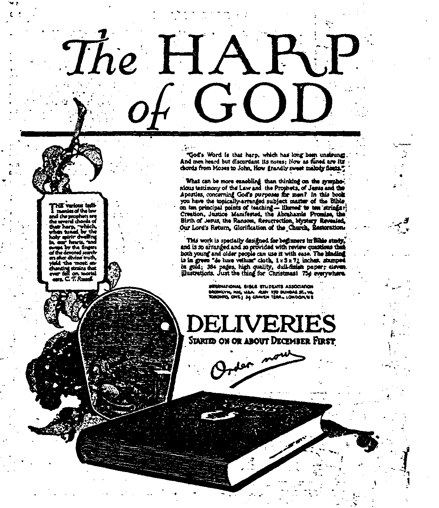

Dee. 7. 19ZU VoL in. Na 58
PuOiiekdd every aikar IIM week at IS Jfyrtla irtMt, Xgp If. r, V. 8. 4.
Tea Ceata > Capy—$2.00 * Year Canada and rartian Conatrtea. *2J0
VOLl'MI D WEDNESDAY, Deraniber T, 1521 NUMBER St
CONTENTS of the GOLDEN AGE
LABOR AND ECONOMICS
Labor hti<1 Capital Should Work The Doctors...... ..
Tmsrttttr ..........................,...........131 Labor-CapiUl Peart...........
Professional Men..............................131 Actual Conditions In Connecticut
SOCIAL AND EDUCATIONAL
For the Toillrg Masses....................136 World Better—Inhabitants
Not Perfect—But!,.................... 136 Horae
Mythomania ......... 141 Captain Hartshorn's Long Lire 14J
FINANCE—COMMERCE—TRANSPORTATION
The Money Tower............................133 A Dying WorW......
Airplane Service................................141 Cnnt'latioii of Railway and Telegraph
POLITICAL—DOMESTIC AND FOREIGN
A Vision of the New Era................131 Dangernus ami Silly America
The Judases..................... 133 The Cye’e of Self-Interest
The Strongest Objectors....................133 The Peyers That Be............
Nearing the Kingdom........................13ft Ireland, the Nrgrti, and the
Soldiers Provided For........................136 Golden Age.........................
Hecs the Flood Coming....................143 Britain and the Negro..................N..,L51
The Constitution and the Bayonet.... 14ft
SCIENCE AND INVENTION
The Clieml'ts’ Golden Age................................„..................,..................
HOME AND HEALTH
Chiropractic and Chiropractors
TRAVEL AND MISCELLANY
Brazil .................................. ........................153
RELIGION AND PHILOSOPHY
Interested In the Wrong Thing*........134 the Earthly, We Shall Bear th*
Tlx» Bible Temrhing.............. 135 Image of the Heavenly’’
Bible .stiMfnits OmveDfion at "We Shall be like ifim for ffe Shall
Washington ................................137 see Blm as He bM........
Advanced Bible Studies....................I5li "He Ye Transformed".......................151
"As IVe Uau Borue the linage uf Juvenile Bible Study...
published every other Wednesday a* -15 Myrtlw Avenue, Brooklyn, N. Y.. . • U. S. A.
Vy WOWWORTH. BUGGINGS and MARTIN CLAYTON J. WOODWORTH ...... Editwr ROBERT J. MARTIN .... Business M«M«4r WH, F. BUDGINGS......Sec'y and Trees.
Copartner* aid proprietor*. Addreaa: 36 Myrtle Avenue, Brooklyn, N. Y., ► U. 3. A,
Tem Cents a Copt — 52.00 a Ysab foheign offices I : 34 Craven Terrace. Lancaster Gate, London W. 2; Canaan: 2TO Dundas St. W.» Toronto, Ontario; Australasian : 495 Coliinf S t., Melbourne. Australia. Make remittances to The GoMm Ajhl
m »*etnd-ela9* tnafttf •! Brwvfclirm. M. T* tAe Art of Msr»A /. II».
Volant III Brooklyn. N. T., Wednesday, December 7, 1921 Number 58
A Vision of the New Era
i
‘ TS IT time to talk peace or to outline some plan ■t by which the world may reach a lasting, satisfactory and just solution of the greatest problem that ever confronted the human race! The Archbishop of York in his speech to the Peers said that once the war was over British labor would not tolerate the scientific management imported from America and elsewhere. They regard it, he said, as a dehumanizing and Prussianizing of industry, and they will resist it determinedly; and James Henry, in a lengthy speech in London, reminded his hearers of the problem of providing for the 11,000,000 men and women engaged exclusively in war services when peace was declared, and wound up by saying that labor and capital would have to come together, but gave no hint or suggestion how they might come together and deal honestly and justly with each.
LABOR AND CAPITAL
Labor can’t do much without capital, and capital can do far less without labor; and between laborers who think they are not getting their just share of this capital and those who think they would have greater prosperity and peace without any, the world is up against the greatest problem the human race ever had to solve. Dr. Snedden at a teachers’ banquet said that we are being moved forward by a combination of events with which we had little to do, and that the question is: Are we going to be organized for it! We have done nothing thus far, but ahead of us lies dangerous ground, and we ought to prepare for these great problems that will pour out of the conflict I believe there is only one solution to the above problem, and that is the nationalization of industries, operated by the people and for the people, Government con-
By Robert Laivson
trol of all the money wealth and product, and the issuing of an untransferable scrip based on labor that will put everyone within reach of all the nation produces or trades in. Well, what would you do with the men who have created fortunes through thrift, ambition or otherwise! Guarantee them the best the nation can produce according to their accumulation. That ought to be better than their fortunes.
Let the Government take over all property and natural resources at, say, the assessed value and allow, say, two percent to the individual owners. Now, we will say that every man and woman owed their services to the Government between the ages of 20 and 50 and that in return the Government gave them $1,200 worth of purchasing power (call it what you like). I would call it hours and minutes instead of dollars and cents. And what about the man with a small fortune—that the two percent did not bring his income up to the $1,200! He would be responsible to the Government for such time as would bring his income up that amount. Of course there would be nothing to prohibit him from rendering his service all the time he wished.
PROFESSIONAL MEN
Well, what about our professional men, who might not have much money but who have spent a lot in getting their education and training! The Government would set a valuation according to their profession, and they would get their two percent on the amount allowed them. All would draw the same pay. Some would say $1,200 is not enough to keep a family on. But the women would draw this salary as well as the men, and the Government would allow each child so much until it became of age. That surely ought to be just. See how our greatest empire builders have had.to carry the greatest burdens.
I might just say here that this wage may be too high or too low, but it really doesn’t matter, for this scrip won’t buy anything but what the nation is producing or trading in.
There is only one question that need concern the Government or the people, and that is: Can we produce enough! And I am sure that it can be answered with a great big “yes”.
What about the farmer or the individual producer! There is no reason why he could not go on the same as ever. There is a set wage and a set price on products; and if the individual can’t manage his affairs to make as much at the same price as the Government can do it collectively, he will work and let someone else manage, and this will gradually get every man in the right place. The price of everything would be based on the labor required to produce it, delivered at the nearest shipping or distributing point. There is no need to add anything for interest or investment. The Government owns
it all, and they pay the interest. The resources that everything conies front that makes a happy and contented people never cost man anything; and the Government is only paying interest on the values that have been put on nature, to do justice to people who have a lifetime of energy aqd ambition tied up in the old system. One generation will gradually do away with that interest; and as most of the wealthy are pretty well up in years,and at death all unused wealth would revert to the Government, they could not transmit any power or money to their descendants, as the rich do under the present system. They seldom produce anything themselves, and therefore are a burden on the back of those who do produce.
Well, you say, this would reduce our market. So it would, and that is just what we want. When we get the people supplied with everything they want, our warehouses and elevators all full, we will shorten the hours of labor, or turn to work and build good roads, or harness our streams. I believe there is enough power going to waste to pull all the trains through the timbered portions of the country, and we would probably save enough in ten years on account of fire to pay for the work. Now, under this new system we don’t need money to do these things. All we need is plenty of good food, clothing and proper shelter, and a share of the abundance of the other good things we are producing.
BUSINESS MEN
How about the business man! The Government would take over all goods, and there would likely be one store of each line of goods at convenient distances; and they would draw from the general warehouse at each distributing point, from which all large orders and heavy articles would be delivered direct to the customer, the stores being used more for samples of the goods. There ought to be a saving here of one-half in clerks and delivery, and a big saving to the customer; for when he goes in he sees what they have and he knows he can’t get better anywhere else and he takes it. No shelf-worn goods and clerks trying to sell you something you don’t want for the sake of holding their jobs and telling you a whole lot of white lies to try to make you believe that they have the cheapest and best in the market. A nice system, isn’t it! And they expect a person to be good. '
The blacksmith may go on as he is doing and charge according to his labor, plus the Government price of material, which he would also do, if he was working for the Government. The same with carpenters, bricklayers, stonemasons, and all tradesmen; but there is no doubt that they would prefer to be Government employes, as the Government would have a labor bureau in each district which would govern and look after labor. No such thing as having to be out of a job. No need of policemen to look after vagrants and hoboes.
THE DOCTORS
Now, take the doctors under the present system. If they are not good, conscientious men, see the chance they have, and the temptation in it, for them to keep a man on his back as long as they can, if he is worth it See what Dr. Lyle Telford says. He said that while doctors were sometimes blamed when they were innocent, it was a fact that there was no “moral strainer” for them to pass through to enter the profession. The incentive of money should be withdrawn. He thought that while there was no profession so capable of elevating a man, neither was there any that offered such scope for degradation in the pursuit of monetary gain. If our doctors were given so many of a population to look after, and a prize of honor given them for who could show the least loss of time by sickness in his district, how long would it be
until you would see a wonderful improvement in the human race! And it would certainly go a long way in helping us along to'the time when * there would be no more sighing, no more crying and no more dying.—^Revelation 21:4.
What has our education done in the past! > Has it not been a fact that the more education a man gets the stronger his ambition is to live off someone else! And this, with the power of t money, has made a lot of misery in the world. But education under a proper system would be one of the grandest things. All would get an equal and practical education; and those who * showed talents along certain lines would finish their course at the expense of the Government, and then they would have no right to expect । any more for their time than any other labor. So, you see, in one generation we would be all on one footing.
1 THE MONEY POWER
What have our banks done towards feeding, clothing, sheltering the people! They have cre-• ated nothing tangible, and yet show bigger , profits than most other businesses. Bartering and trading for interest from the sweat of men’s i brows—that is all money is under this system.
There js only one source through which wealth ' can come, and that is through labor out of the natural resources. This being so, how is it we ’ find the accumulations of labor in the hands of corporations that never created anytliing tangible, and that through the money system have put a fence around everything that nature has ( provided, and have left labor at the mercy of the monied interests of the world!
Now, do not think that there is science enough in the world to make laws that will guarantee • peace under such conditions. No; and the world is trying by brute force to maintain the condi-i tions that this money system has brought into 1 the world. Who would believe that such a system could be built up by the will and approval ( of our Creator! The Bible gives the only rea-( sonable explanation of how and by what power this evil system has flourished. It says it is the R prince of this world. (John 12:31) He has put darkness for light and light for darkness. (Isaiah ■ 5:20) Darkness covers the earth and gross
. darkness the people. (Isaiah 60:2) Yes, and after 4,000 years of man’s career the world was , in such darkness that it crucified the Prince of Peace.—Acts 3:15.
THE JUDASES
No doubt Jesus chose twelve of the best men He could find in His day as His disciples; and money had gained enough power in the world at that time to cause one of His followers to betray his master for thirty pieces, and led up to the putting to death of the greatest benefactor of the human race that ever lived. We are told that the common people heard Him gladly. (Mark 12:37) It was the priests and the political power of His day that were accountable for His death, but the political powers would not have done it had it not been for the scribes and Pharisees. Pilate took water and washed his hands, saying, “I am innocent of the blood of this just man”. But has it not been the same all through the ages! Stephen was stoned to death because he was the leader of a community movement built on justice and equality. Don’t we find the same spirit in the world today in both our religious and political powers! Why! Because of the blinding effect of the power of money, which permits people to live off the energies of someone else and causes them to break one of the first commandments that God gave man: “In the sweat of thy face thou shalt eat bread till thou return to the ground”.— Genesis 3:19.
How is it that the world has always held in high esteem those who have made the best job of breaking this commandment! It is just as the Bible says—because we are under the power of the prince of darkness (Satan) whose desire is to exalt himself above others, even above the stars of God. “I will be like the Most High.” (Isaiah 14:13,14) Who is so blind that cannot see this spirit in the world today! Is it not this spirit that has drenched the world in blood and threatens the world with starvation, and all because of the power of money! If it were not for the power of money through the profit system Satan would never have been able to deceive the human race as he has done. Have our religious creeds warned the people against this greatest of all evils (the profit system)! No! Money is held more sacred than men’s lives.
THE STRONGEST OBJECTORS
Who are going to be the strongest opposers of this system that I am trying to outline! The religious and political powers. Why! Because they are of this world (age) which is under the . power of the prince of darkness; and to do away
' with the profit system would rob them of their power and go a long way towards binding Satan. How much easier it would be to keep the commandments if we had an exchange based on labor performed and non-transferable payment. There would be little or no temptation to kill, and wan would be impossible. There would be no {temptation to steal, practically no temptation to bear false witness, no white slavery, no graft, no poverty.
“Thou shalt have no other gods before me.” How many gods are money and the profit system accountable for in this age! And a multitude of other evils that arise from the old system would soon be abolished. Take the world liquor traffic. If there were no profit you would not find men making and handling stuff that would injure their fellowmen.
Laws would be reduced to ‘a minimum, as practically all laws, on account of individual ownership, deal with buying, selling, leasing, mortgaging, deeding, transferring, taxing, use and misuse of land, mines and water. The amount of wasted energy with the expense of enforcing them would relieve seventy-five percent of those thus employed to help production.
Would it not be worth a lot to the world to be relieved of seventy-five percent of the worry and strife caused by property law? Now, when you take a case to court you take an oath to toll the truth, the whole truth, and nothing but the truth. But your own lawyer will try to keep you from telling the truth if it doesn’t suit, and the opposition will try to get you to lie if the truth doesn't suit; and the more expert they are at this the more honor they get. There would be no such work as this if it were not for this evil system.
LABOR-CAPITAL PEACE
See the expense and energy lost in keeping up both labor and capitalistic organizations which could all go to help production. Look at the time and money spent in fire and life insurance, which is all unnecessary under a proper system, as everyone would be insured by the Government and would need no policy, as the Government would make good all accidental loss, such as disasters. The Government would send a part of its industrial army there to restore the loss. We would not need to go begging all over for them. [This plan does not work well in Russia, because the home-loving industrial army does not like to be shifted around.—Ed.] Competitive advertising would not be necessary, and who can estimate the labor and expense that would be saved in this item! I am sure there is not one-quarter of the papers taken up in newFs; and if it was not for war, murder and stealing there would not be half of that. All this help then we would have in the way of production. And we would need no customs officers; for the Government would be the only foreign purchaser, and the individual exchange would not buy foreign goods. The Government has all the money. Well, you say, there would be a temptation to misuse it. No; because it would not buy anything within the nation. Here is another great army to help production. And then we have the army and navy, which in time of peace would easily give us much more producing power.
Under this new system there would always be peace; for there would be nothing to go to war for. No other nation would want to invade our country. What would they want to do that for if we were living up to our income and not forcing our surplus on foreign markets?
Well, with all this extra production, what would we do with it all? As soon as we had an abundance of everything we would start in to beautify our country and to shorten the hours of labor. Do our politicians not see that every dollar’s worth of product shipped to a foreign market is that much of the energy and sweat taken from her people’s brows? Why not organize under a system along these lines and enjoy the results of our own labor, instead of shipping it abroad?
INTERESTED TN THE WRONG THINGS
How is it that the more interest you find people taking in churchianity the more opposed they are to any system of equality? Is not this the very opposite to . Christ’s teachings ? And yet they pray; “Thy kingdom come; thy will be done on earth, as it is in heaven”. Do many of our preachers believe in this kingdom they are praying for, and that it is going to be set up on earth? If they do, would not this system I outline be more in harmony with Christ’s wishes? I am sure it would, but I venture to say that nine out of every ten preachers or priests will condemn the idea. On the other hand, would our present system please Christ? I say no! Does it please Satan? Then it is the result of
his influence upon the human race, but I don’t believe he can be very well pleased with the job i he has made of it.
Christ also told us to pray: 'Deliver us from evil and lead os not into temptation'. You would : think that anyone who was anxious to see this
kingdom set up on earth would be anxious to have those evils and temptations removed. Now, the power of money and the unlimited profit 4 system is the worst evil the human race has to contend with. It is the root of all evils and our religious organizations have not one word to say । against it Why! Because it would not suit our financial interests.
( NEARING THE KINGDOM
Can we help in the setting up of this kingdom on earth and support present worldly interests! Judge for yourselves. There is no doubt but z that we are drawing very near to the setting up of this kingdom wherein dwelleth righteousness. : (2 Peter 3:13) When “they shall beat their
< swords into plowshares” and 'every man sit under his own fig tree and eat the fruit thereof 1 (Micah 4:3,4), “then shall the righteous shine
f forth”. (Matthew 13:43) “There shall be no
more sighing, crying or dying.” (Revelation 21:
1 4) This cannot apply to the spiritual kingdom;
for nobody believes that there is any sighing, ’ crying or dying there. A host of other scriptures point to glorious conditions right on this earth.
■ Bellamy saw the Millennium, and you ought . to read his book, “Looking Backward,” and see ( what a system of equality and harmony he saw
. in operation. He asks: “What is liberty! How ( can men be free who must ask the right to labor, and to live from their fellowmen and seek their 1 bread from the hand of others!” He also saw . that as soon as this inhuman social order which < ( formed a wall between God and man was broken
i down the light flooded the earth like a sunburst.
• I am sure it would be a more reasonable way of reforming the world to better social condi-। tions than trying to persuade men to be good and take their medicine. For the benefit of un* believers I will try to show how much of the
. Millennium Bob Ingersoll saw:
"I see a world without a slave. Man at last is free.
, Nature’s forces have by science been enslaved, lightning and heat, frost and flame, and all the wondrous powers ’ J of earth and air will be the tireless toilers for the human i race.”
LIBERTY RESTRAINED NOW
How many people are there today who dare not express their views for fear of losing their jobs! Are they not in a sense slaves! Who are benefiting from nature’s forces and the wonderful inventions of today! Soulless corporations managed by hired men who have to show certain dividends to the stockholders or lose their jobs. Has the utilizing of these forces and laborsaving devices bettered the workingman’s condition! No, he gets more pay, but has to pay more.
Prof. Herzog says that 4,000,000 people with the machinery of today employed at useful social labor would be able to supply a population of 20,000,000 people with all the necessaries and small luxuries of life by working one and a half hours a day. If they worked eight hours it would take 883,000 to do the same. I think, to start with, eight hours' work, eight hours' play and eight hours' sleep would bring a great deal more peace, health and-happiness.
Ingersoll goes on:
“I see a world at peace adorned with every form of art; with musical voices thrilled; where lipa are filled with love and truth; a world in which the gibbet’s shadow does not fall, no exile sighs or dreamer mourns ; where work and worth go hand in hand, and the poor girl in trying to earn her bread is not driven to the desperate choice of crime or death, or suicide or shame.”
Do you think the majority of the people who have been praying, “Thy kingdom come, thy will be done on earth,” see in their hearts these glorious prospects for the world of mankind 1 Would not these conditions be more in harmony with Christ's will than those we see in the world today! And yet the ecclesiastical system branded this man an outcast.
Ingersoll also said:
"I see a world without disease of flesh or brain, shapely and fair, the married harmony of form and function, and as I look life broadens and deepens, love canopies the whole earth, and over all in the great dome shines the eternal star of human hope.”
THE BIBLE TEACHING
Do you know that the Bible teaches these very ideas! It says a person will be considered as a child at one hundred years old, and if he is still a sinner at one hundred years he will be accursed. (Isaiah 65:20) “Everyone shall die for his own iniquity.” (Jeremiah 31:30) I am sure that everyone knows that we can’t avoid death by living saintly lives in this age, and the star that Robert Ingersoll saw was Christ, who
provided the ransom-price for the unjust as well as the just (Acts 24:15), and the unjust will arise in the second resurrection. “Marvel not at this, for the hour is coming when all that are in their graves shall hear his voice.” (John 5: 28) Now, according to the theories of men, the dead are in heaven, hell or purgatory. Which is right, man or the Bible! How did Ingersoll get a glimpse of this heaven we were to pray for! He did not believe the Bible. He thought that these learned men were teaching the Bible, and the teaching was too unreasonable for him to accept; so Ire discarded both. It was because he had enough love for the best interests of his fellow men that he was permitted to see over into the next age, a new heaven and a new earth. If the world had listened to such men as Abraham Lincoln, Robert Ingersoll, Thomas Paine, and others the world would not be suffering what it is today at the hands of ecclesiastics, politicians and Big Business.
SOLDIERS PROVIDED FOR
Now, one of the main objects in writing this was to show how we could provide for our returned soldiers. I think I have shown how we could recompense the wealthy in a just way by guaranteeing them the best the nation can produce according to their accumulations. Wouldn’t it be just as easy to do the same with the soldiers, according to the services performed and their condition of health! I am sure they are many more times deserving of it than the rich. I am sure they would be proud of their country and feel in a measure paid for their sacrifice.
We have still another force in the world to consider, which is taxing the brains of all the heads of our governments to keep pace with— the Socialists, labor unions and industrial workers; and if something along the lines I have mentioned will not bring capital and labor together peaceably, what will! It will surely furnish some food for thought, and thought combined with reason will solve the problem, and this is something every leader of those organizations should try to impress on their members. Every move towards violence and strife will only injure their cause. Our ambitions will most likely be obtained in the natural way. The way things are working now necessarily will play a big part, guided by the Unseen Hand. The unfathomable wisdom of our Creator has put a little rgan into the heads of human beings that when the possibility of hunger makes itself a little more realized the world will begin to think and see what an enormous waste and hindrance to production this awful system is, and that any violence will only make things worse and not bring the desired end one day sooner.
- Christ gained the greatest victory that ever was attained through suffering the worst kind of persecutions, and He is at the helm and will still the storm and land this old leaky ship safe on the shores of Paradise.
MZitsn or BticKumr, masons. mastww. and tile-scttcm union, no. u. fa.
IT HAS been my privilege during the past to come into close contact with some of the leaders of the toiling masses who have built the imposing material structures of civilization; and I must say that generally speaking that leadership has been able, wise, and with a view to uplift.
If the leaders as well as the rank and file of the great army of Labor, organized and unorganized, could only be reached and instructed by such magazines as The Golden Age, we would no doubt see the present evil systems and organizations gradually give way to something better than the rule of gold that now prevails.
Not Perfect—But By Elston Luttrell
I WISH to congratulate you (and your readers) on the.article headed “Everlasting Life on Earth” by N. T. Hartshorn, as presented in Golden Age Number 50, August 17th. While the article may not be entirely exempt from occasion for criticism, yet on the whole I consider it a marvel. It will surely bring much cheer and comfort to the poor world.. It will cause many to think along avenues of thought therein opened up.
Judge Rutherford's defense of Zionism in Number 51 is surely a masterpiece in its field.
PASSES IMPORTANT RESOLUTION AS MEMORIAL TO INTERNATIONAL ARMS CONGRESS PUBLIC ADDRESSED BY PRESIDENT OF ASSOCIATION
' [Special to The Golden Age]
WASHINGTON, D. Nov. 27.—The Inter-_ national Bible Students Association is in
i convention at Washington at this time. Previous to Sunday morning the time has been occupied in devotional services, personal testi* monies, and discourses by various able speakers.
Sunday morning the convention in official session formally passed a resolution memorializ-’ ing the International Arms Congress now assembled at Washington, which is pertinent to the all-absorbing question before the people of , the earth at this time. Dr. R. A. Gamble, of
Virginia, presided at the convention; and Mr. F. H. Harrison, of New York City, acted as Secretary. The President of the I. B. S. A. was ’ also present. The resolution was offered by Mr.
C. H. Anderson of Baltimore, and seconded by Mr. Stephen Kendall of Washington. Other ' prominent delegates at the convention made speeches favoring the resolution; and upon a vote being put it was unanimously passed. The 4 resolution follows:
, RESOLUTION
The International Bible Students Association, in con; vention assembled at Washington, D. C., begs leave most respectfully to memorialize the International Arms Con-■ gress now assembled at Washington, D. C., as follows-.
As Christians earnestly striving to follow the teachings of Christ Jesus our Lord and His apostles, we hold:
' ’ That war is a relic of barbarism, destructive of good morals and a reproach to Christian peoples;
That the principles taught by the Lord Jesus Christ । . preclude consecrated Christians from engaging in war,
bloodshed or violence in any form;
That no nation can be said to be truly Christian which fails to adhere to those principles taught by the Lord » and His apostles; '
That the ruling or governing factors of the nations commonly palled “Christendom” are now and for some time have been, to wit, Financial Princes, otherwise ' termed Controllers of Commerce, Statesmen or Polit-* ical Leaders, who formulate the laws, and Clergymen and other Ecclesiastical Teachers, the last named, both , Catholic and Protestant, having contrary to the Word of God, joined hands with the two first-mentioned factors (which three component parta here mentioned we for convenience and identification designate “The Ruling
• Powers”);
That the delegates and representatives of The Ruling
Powers now assembled in international conference at Washington for the purpose of the limitation of armaments, and insofar as possible for the establishment of conditions of peace and prosperity among the people, have before them a laudable objective.
But we may be pardoned for humbly suggesting that the end desired cannot be attained by a partial or even complete disarmament of the nations. Reformation of men or nations will not result from the destruction of arms, but genuine reformation of men will lead automatically to the complete destruction of all instruments of war and all forms of violence. While war is terrible beyond description of human phrase, yet it is not the worst thing to be feared.
Bolshevism, as a great menacing monster, is knocking at the door of every nation, and the destruction of all law and order is threatened. To prevent such terrible disaster and to save the people from indescribable suffering is the tremendous problem, which, we submit, requires more than human wisdom. We therefore suggest that the heeding of Divine wisdom and the adoption of the Divine remedy as prescribed by God's holy Word is vitally essential at this time.
The kingdom of Christ, the Messiah, for which He taught His disciples to pray, is at hand. This is evidenced by the World War, famine, pestilence, social upheaval, distress of nations with perplexity, etc., all of which constitute the fulfillment of prophecies made by Jesus himself as relating to the present time. Within a short time His kingdom will be fully and completely established and the old order of tilings completely gone. To that kingdom all earthly powers must be subject either willingly or unwillingly. The trouble upon the nations beginning in 1914 is but the expression of God's vengeance against all unrighteous systems in the earth.
The holy prophets of Jehovah indicate how that the kingdom of Christ, the Messiah, may be established without great suffering to humanity, provided that the Divine way be adopted. You will pardon us, therefore, for calling your attention to those Divine prophecies long ago recorded, which in substance indicate what the proper course is, to wit:
(1) Let the Financial Princes, the Controllers of Commerce, cease profiteering, cease exploiting and deceiving the people by systematic propaganda, and be content with a reasonable income sufficient to insure their own maintenance and support; let them use their power for the general welfare of the people to the end that the idle may be employed, the hungry fed, and each man be afforded an opportunity to provide for himself and loved ones the things decent and honest in the sight of God and man.
(2) Let the Statesmen or Politicians cease to act as instruments of selfish powers and selfish interests and henc^frwfh honestly and impartially represent and safeguard the interests and general welfare of all the people.
(3) Let the Clergymen and other Religious Teachers, who cImbi to be ministers of God’s Word and therefore the nsWes among the people, divorce themselves completely from commercial and political affiliations, return to their first love, recognize God's Word as truth, honestly and faithfully teach the people the principles taught by Jesus and the Apostles, and thereby prepare the people to receive the kingdom of Christ, the Messiah, who alone can and will establish peace on earth and good will toward men.
Let the Ruling Factors by example as well as by word thus lead, the people in the right way and prove that they are the real friends of the people; and let all the people heed the words of God, refrain from violence of every kind or form, seek meekness and righteousness, and the occasion for armament and war will cease. These things done, the kingdom of Christ, the Messiah, will be established on earth without suffering.
We shall be pardoned for saying that the prophecies clearly indicate that if the divinely prescribed remedy be ignored, this being the day of God’s vengeance, as declared by His prophets of old, His wrath will be visited upon every government and system of Christendom; and both Jesus and the prophets declare that such shall be "a time of trouble such as the world has never known", at which time shall “Michael [the Messiah] stand up, the great prince that standeth for the children of thy people”. This standing up of Michael will effect the deliverance of mankind from all forms of oppression and will mark the beginning of righteousness on earth. The result will be God’s will done on earth as it is done in heaven, for which Jesus taught Christians to pray.
Great responsibility rests upon the Ruling Factors of the nations of earth now in the hour of dire distress and perplexity; and we shall be pardoned for requesting such to give earnest consideration to the Word of God, having in mind that “blessed is that nation whose God is Jehovah”.
Resolved, that a copy of this memorial be delivered to the Honorable Charles Evans Hughes, Chairman of the International Arms Congress now in session at Washington, D. C.; that copies be furnished to each delegate or representative of the nations attending said conference; that a copy be delivered to the President of the United States, and copies to the members of Congress and to the publie press.
Upon motion duly put the above resolution was unanimously adopted by the convention this £7th day of November, 19£1.
[Signed]
Da. R. A. Gamblx Chairman of Convention
Frank H. ELabbison Secretary of Convention J. F. Rutherford President, I. B. 8. A.
At 3 o’clock in the afternoon the President of the Association, Judge Rutherford, addressed a public assembly at the National Theatre in his now world-famous lecture, “Millions Now Living Will Never Die". Eveiywhere Judge Rutherford speaks upon this subject the houses are filled to overflowing, and Washington was no exception to the rule. Intense interest was manifested by the audience in the points made. We give some of the salient points of the lecture.
“For many centuries devout Jews and both Catholic and Protestant Christians have looked for the establishment of a Messianic kingdom, under whose reign blessings would be given to all the peoples of earth obedient to the laws of that kingdom. While the Jews have not accepted Jesus as the Messiah, they have based their hopes upon the combined statements of the holy prophets of old. All have expected these blessings to come at the end of the world. By the end of the world is meant the end of the social and political order of things. According to Bible chronology the gentile times were due to officially-end in 1914, marking the end of the order of things that had existed since the days of the deluge.
“In response to a question as to what would be marked evidences of the end of the world, Jesus answered that the world would be involved in a war, nation against nation, and kingdom against kingdom, to be followed by famine, pestilence and social upheavals in various parts of the earth; and that these things would mark the beginning of the disintegration of the old order. Exactly on time the World War began in 1914, and the other things have followed. ■
“All the prophecies as well as the testimony of Jesus and the apostles point to the fact that with the coming of the new order under the Messiah life everlasting will be offered to all of the obedient ones of the human race. The basis for this is the great ransom sacrifice. God created the first man perfect, who sinned and was sentenced to death, and by reason thereof, through the law of inheritance, all the human race have been born sinners. Jehovah promised to redeem the race from death. He sent His beloved Son Jesus to accomplish this very purpose, who T>y the grace of God tasted death for every man’. Jesus stated that at His return He would extend the blessings to the people, gathering all nations before Him. Since the time of His ascension on high until the setting up of His kingdom has been known as the gospel era during which time the Lord has been selecting the church, namely, the members of the body of Christ, true Christians. This finished, the time of reconstruction and restoration of the human race must follow. During that time all the obedient ones shall be restored to life.
“Both Catholics and Protestanta believe and teach that ‘Christ comes the second time to judge the living and the dead*; and all such Christians have prayed for
.. the coming of Hie kingdom. It follows, then, that at Wia coming the living must be first given an opportunity for life, after which those in their grates will be awak->* ened and given an opportunity for life. Having come, then, to the end of the world and the time for the setting up of Messiah's kingdom, it can be confidently announced s that millions now living will never die. For the reasons here stated this good news is now being spread throughout the earth and is making glad many millions of people;
' “It is claimed that the United States is a Christian nation. God’s favor has been specially upon the peoples of this nation, which favor carries with it added respon-, sibility. Every Christian believes the words of Jesus which He taught His disciples to pray: ‘Thy kingdom come; thy will be done on earth,’ to mean that they should pray for and expect the coming of God’s king-1 dom on earth. When Jesus stood before Pilate He said:
“My kingdom is not of this world*—meaning that His kingdom would not be of the unrighteous order then < existing but would be future.
“Both Jesus and His apostles taught that Satan is the god or ruler of this world or order of things, dominating the minds of those who exercise controlling authority. For this reason true reformers of governments have never been able to make marked and lasting na: tional progress. Selfishness has always been to the fore;
and brotherly love exhibited in a very limited way, and ' often as a cloak or camouflage behind which has oper-, ated the superior mind of Satan.
“To deceive the people Satan has put forward various { farms of government in the earth. These forms of government Jehovah has symbolized by the word ‘beast’. i The first government thus designated was the universal empire under Nebuchadnezzar. The last indicated by . the Scriptures is the League or Association of Nations, which is an attempt by Satan to keep the people under 1 his rule by uniting the various governments. Being deceived by sinister and unseen influences, the Federal ! Council of Churches issued a statement containing these । words relative to the League of Nations: ‘Such a league is not merely a peace expedient. It is rather a political expression of the kingdom of God on earth.’ Seemingly they have overlooked the fact that God’s prophets twen-। ty-five hundred years ago foretold a Satanic effort to organize a league of nations, foretold its short duration and complete collapse.
‘.‘Now with expectancy the minds of the peoples are ' turned toward Washington, many believing that the * Disarmament Congress will prevent war and establish on earth peace and good will toward men through the , instrumentality of men. The master mind back of the whole arrangement again is Satan. He knows that i shortly the Messianic kingdom will be established, during which time the nations will ‘bgat their swords into ’ plowshares and their spears into pruninghooks, and will cease to war with each other’. He hopes by a counterfeit arrangement to draw the minds of the people away from the Lord’s kingdom now being established.
“A complete disarmament of all nations would be a splendid thing, but that alone would not bring lasting peace and happiness amongst the people. There must first be a reformation of men by faith in and obedience to the principles taught by Jesus. True reformation will automatically lead to a complete disarmament and the end of all wars and similar troubles.
“In centuries past the king was absolute monarch or ruler of the people. Now there are three eletneinte of society which go to make up the governing factor or ruling power, to wit: Financial Princes, the controllers of commerce; Statesmen or Political Leaders, who formulate the laws; and the Clergy and Ecclesiastical teachers, who, contrary to the Word of God, have departed from the high commission granted to the followers of Jesus and have united forces with financiers and politicians. Because of the course of the ecclesiastics, this alliance is an unholy one. God’s wrath is upon it. This is the day of God’s vengeance upon the nations of earth, and has particularly found expression in the world troubles since 1914. '
“The kingdom of heaven, for which Jesus taught His disciples to pray, is at the door. The King of glory is here. Shortly all the nations must become subject to Messiah’s righteous reign, either willingly or unwillingly. The present ruling factors of the old order occupy a place of tremendous responsibility, because these could do much to avert the terrible trouble that is now threatening all civilization. The worldly wise see this. The public press freely gives expression to the opinion that ‘if the disarmament conference fails to establish a permanent peace, the whole world will shortly be plunged into chaos*. The conference is certain to fail unless the divine remedy is heeded and adopted.
“The time has come for God through Christ to establish His kingdom in the earth, and Iwfore it shall vanish the power and rule of Satan. Let the peoples take notice, and let the ruling factors take notice, that God’s prophet centuries ago, having in mind the very time in which we are now living, pointed out that society’s great menace would originate in the north country, i. e., Russia. This prophecy has been fulfilled; and Bolshevism, having its birth in Russia, is moving Westward like a great monster, threatening all the nations of the earth. God’s prophet, having-a vision of this, wrote: ‘Thus saith the I.ord. Behold, a people cometh from the north country [north of Palestine, from which this prophet spoke], and a great nation shall be raised from the sides of the earth. They shall lay hold on bow and spear: they are cruel, and have no mercy; their voice roareth like the sea.’ (Jeremiah 6: 23, 23) The destruction of law and order is threatened, and this is plainly seen by many; but Satan is deceiving the minds of many into ignoring the divine arrangement and substituting an imperfect and inadequate arrangement. God’s prophet
then clearly indicates that the kingdom of Messiah may be established without great suffering: ‘If that nation against whom I have pronounced,turn from their evil, I will repent of the evil that I thought to do unto them’. WW.th*", could be done to avert the terrible disaster and suffering untold? The Lord through His holy prophets then indicates what may be done, which ire epitomize as follows:
“Let the Financial Princes, the controllers of commerce, cease exploiting and deceiving the people by systematic propaganda, be content with a reasonable income sufficient to insure their own maintenance and support; let them heed the cries of the people for relief, and let them use their powers honestly for the general welfare of the people to the end that the idle may be employed, the hungry fed, and each man be afforded an opportunity to provide for himself and loved ones the things decent and honest in the sight of God and men.
“Let the Statesmen or Politicians cease to act as instruments of selfish powers and selfish interests, and honestly and impartially represent and safeguard the general welfare of the people.
“Let the Clergymen and other religious teachers who claim to be ministers of God’s Word, and therefore nobles amongst the people, divorce themselves completely from commercial and political affiliations, return to their first love, recognize God’s Word as truth, and honestly and faithfully teach the people the principles taught by Jesus and the apostles, point out to them the fact that the King of glory and His kingdom is at hand, prepare the people to receive the Messiah, and show to the people by their acts as well as their words that they have confidence in God and in Christ Jesus and the words which He taught; and let them tell the truth that the Lord alone will establish peace on earth and good will toward men.
“The ruling factors must take the lead, because the responsibility is upon them. Let them prove that they are really the friends of the people and not their exploiters. Then let them and all the people heed the words of God to put aside selfishness, refrain from war, revolution and violence of every kind or form, seek meekness and seek righteousness. These things done, the trouble and threatened disaster will be averted, and the kingdom of Christ the Messiah will be established without suffering, and lasting peace and happiness will come to mankind.
“But will the ruling factors heed the words of the Lord Jehovah? It is hardly to be expected that they wilt Failing to heed, the Lord’s Word indicates there shall follow shortly ‘a time of trouble upon Christendom such aa never was since there was a nation', and which trouble shall be the final climax of troubles in the earth and will mark the birth of the new era. At this time shall 'Michael [the Messiah] stand up, that great prince that standeth for the people*. Then will the people be delivered ; and every one who renders himself in obedience to the righteous rule of the Messiah will be gradually brought up to a state of perfect health, soundness of body and mind and live forever. Then will be fulfilled . the words of Jesus Himself: ‘Verily, verily, I say unto you, if a man keep my saying, he shall never see death’. ‘Whosoever liveth and believeth in me shall never die.’ His kingdom will mark the new heavens, and * His establishment of the righteous order on earth will mark the new earth or order of society. And this new order of things will result in what was stated by the Revelator, namely, that ‘God will wipe away all tears from their eyes, and there shall be no more death'.
“Seeing, then, that the kingdom of heaven is at hand, evidenced by the war, famine, pestilence, revolutions and threatened anarchy, and knowing that this kingdom will shortly be established either with or without a great time of trouble, and knowing if the worst must follow that it will be the last trouble on earth, those who have faith and confidence in the Lord and His Word can now truly say that millions of people living on earth at this time will be granted an opportunity for life everlasting, and., seizing this opportunity will live forever and never die.
, At the convention reports were made concerning the spreading of the message in foreign countries, which indicate how greatly the people are being moved with joy at the prospect of Messiah's kingdom being at hand. Among the reports was one from Austria to the effect that thousands in Vienna are hearing with gladness the message of the Messianic kingdom. Austria has long been known as the very center of Papacy, and so strong was that system that others were not permitted to preach the gospel. From the report made at this convention it was quite clear that conditions are rapidly changing. Similar encouraging reports were given as coming from the countries of Poland, Switzerland, Scandinavia, Holland, Great Britain, Canada, Korea, and other parts of the world. The convention concluded on Sunday night with an address by Prof. Hildebrandt of Annapolis.
THE AGE OF GOLD
O glorious will of God. unfold The splendor of Thy way;
And all shall love as they behold.
And loving shall obey; ,
Consumed each meaner care and claim
In the new passion's holy flame.
Oh, speed the hours when o’er the world The vision's fire shall run;
Night from his ancient throne is hurled, \
Uprisen is Christ the Sun;
Through human wills by Thee controlled. Spreads o’er the earth the Age of Gold.
. —G. DorlMtoe,
Airplane Service
THE airplane service between London and
Paris has been so improved that fifty cars are now in regular use; the fare has been reduced to $10; mail and express are carried in such quantities as to exceed in value all other merchandise transported between the two cities, and accidents have been practically eliminated. America is slow.
Chiropractic and Chiropractors
In previous issues of The Golden Age we have published much pro and con on chiropractic and chiropractors. It is not the policy of this magazine to write on these subjects editorially and henceforth we will avoid them. The Golden Age is not in the medical profession and has no medical experts on its staff, and our purpose is not to discuss matters we know little about.
The Chemists* Golden Age
THE New York World reports the speakers of the American Chemical Society as predicting that in due time, as a result of chemical research, the Desert of Sahara, with its 6,000,000 square kilometres of waste, sun-baked area, will furnish solar energy equivalent in a year to 6,000,000,000 tons of coal; the tide along every coast will put their heavy shoulders to the turning of motors; catalytic action will speed up every industrial process; as the earth turns night and day it will tug at the belts of power-producing machines; rain will fall from the clouds as the farmers need it; atomic energy will be unleashed to do the bidding of mere man, but carefully, lest one atom set off another and the whole earth disappear in a flash and a puff of smoke like a horn of powder under flint and steel.
Little man, a new Aladdin, will rub his magic chemical lamp; and the powers of earth, sea and air will appear to take orders, somewhat reluctant at first, perhaps, but more and more submissive with every year. In those days there will be no work done by hand, and no man will work more than a fraction of a day. Increased knowledge of food vitamines and medical and surgical science will banish ill-health forever; telescopes will bring the rest of the sun's constellation next door, and wireless will solve the problem of communication. With power as cheap as air, men may travel where they like, . study what they please.
Then, if ever, the human race will learn something about music, poetry, and the possibilities of architecture. When life is one long vacation, men will have time to catch up with the avocations they neglect for business in these busier times. Of course it hasn’t happened yet, but it may happen. Perhaps it has been a mistake to imagine the golden age in the past.
Mythomania By Claude Mitchum
THE most misunderstood form of lying is that known as “mythomania”. In it the person who tells the falsehood does so without purpose, and sometimes with injury to himself. This practice develops from the fable-making of childhood, and unless corrected early will work great harm in one’s life.
There have been cases of mythomania in adults that baffled the best of detectives. The victim of this habit has told things about himself and others that might be highly incriminating, and when questioned has made use of his quick presence of mind to strengthen the circumstantial evidence against himself. This mental disease often works harm upon others who are as innocent as the mythomaniac himself, though he is as prone to tell flattering lies of himself. There are more cases of mythomania among men, and especially among the returned soldiers, than among women and children.
A Dying World By w. d. Lamb
John Buckley, in the August number of Thu Golden Age says:
“Every one admits that the world is very sick. No one has a cure but that of more business. Nd one has told us yet why the world is sick.”
Now, Mr. Editor, Mr. Buckley means well, but he is absolutely mistaken. True, the world is sick, and will become a series of extinct civilizations unless the more thoughtful people do more straight thinking and less random talking and guessing.
Back in 1880, a man called Henry George, the greatest philosopher of all the ages, greater than Secrates, Plato or Aristotle, gave us a book, “Progress and Poverty, or Increase of Want with the Increase of Wealth, and the Remedy”. That book proves how nations sicken and die. It also points out the elixir of life for nations. The disease is Injustice in Taxation, and the remedy is Justice in Taxation.
Those who have brains to think need not think long after this tip before they see why nations are sick; and the worst is yet to come. It is all down in the book. Henry George answered every objection, and he did it in such a way that all the Philadelphia lawyers in America could not gainsay the argument. Those seeking for the causes of our serious condition will find it right there and nowhere else.
World Better—Inhabitants Worse
HE world is growing better — the physical world. Preparations are under way for the irrigation of the great Sahara desert, now comprising f»ur million square miles of territory, one-thirteenth of the land area of the globe. A small portion of this great tract, already under cultivation, is proving to be one of the garden spots of the world.
The world is growing worse—the social world. Criminal indictments against more than 100,000 persons now are awaiting trial in the Federal courts. T^ie courts are jammed, and the calendars are filled for months ahead in almost every district in the United States.
The world is growing worse — the financial world. The New York Times, discussing the European financial situation, says: “There is but one sequel to the story—the elimination of moneys as the medium of exchange and the return, for a time at least, to primitive barter wherein no coin of the realm changes hands and one merely gives his own surplus of goods for the surplus of his neighbor”. When that idea takes root everywhere it will be a fine thing for those who have large stocks of goods on hand at'the time it goes into effect, and bad for all others, including the holders of stocks, bonds, and paper money.
The world is growing worse — the military world. Chicago has produced a chemist, Dr.
A. Frank-Philipson, alleged to have originated “liquid death", a poison so powerful that three drops touching any portion of the body will kill, and when sprayed from an airplane will destroy every living thing beneath. Uncle Sam is reported to have two thousand tons of it ready and waiting to make Christians out of the Japanese.
The world is growing worse — the mental world. Dr. John Harvey Kellogg, Superintendent of the Battle Creek Sanitarium, says that the intellectuality of the human race is deteriorating at an alarming rate; that at the present rate of decline in the birth rate not a child will be found in France, England, or Germany a century hence; and that insanity, imbecility, and epilepsy are so on the increase that at the present rate of increase in three centuries all mankind will be imbeciles, lunatics, idiots, and epileptics. This is the fruitage of the brain age.
The world is growing worse — the industrial world. The United States is wallowing in a mire of taxation that is engulfing the country, the per capita federal taxation being today $1.05 more per capita than the per capita circulation of money in the country. In other words, all the money in use in the country, and $100,000,000 more, is needed to pay the Washington bills. This has helped to ruin business in America; and concerning the situation in England Sir Philip Gibbs says that there is no prospect whatever of trade recovery, but every prospect of increased distress.
Captain Hartshorn*s Long Life
ewton T. Hartshorn, one of the regular contributors to The Golden Age, is now over eighty years of age, and ill with cancer of the stomach at a hospital in Massachusetts. His article “Everlasting Life on Earth” is in some respects the masterpiece of his life. It appeared in Number 50, and has been widely commented upon and appreciated.
Captain Hartshorn, like all elderly people, finds enjoyment in recalling the events of long ago, events now so long in the past that it seems as if no living man could have witnessed them. From one of his letters to a newspaper published in his boyhood home in New Hampshire, The Milford Cabinet, we quote extracts which we think some of our readers will enjoy. It is not often they come in contact with men who knew the great men of America, when the total population of the country was less than onefourth of what it is now. Portions of his letter follow:
“President Frank Pierce I knew aha He was from Hillsborough. My mother’s father, Fisher Gay, was quite prominent there, and Pierce used tp visit at my grandfather Gay’s house.
“When the Civil War seemed all ready to burst forth I was at Bradford and I started toward Amherst, stopping over night at my uncle’s, Newton Gay (at Hillsborough)', for whom I was named. In the morning while we were at breakfast the paper came; and 'my unde, glancing at it, jumped up and excitedly said: 'They have fired on Fort Sumter!’ Beading on down, 'Raising a regiment at Concord,’ he shouted: *1 hope everyone that goes down to fight the south will be killed P
“I jumped up, pounded the table until the dishes rattled, and shouted: fl- am one of them,’ caught my hat and ran for the train, got it and enlisted in Concord. Bill Chandler, afterward Senator Chandler, was a captain and mustering officer. I held np my hand to be ■worn in when Chandler, seeing my name, said: 'Are yon related to V. J. Hartshorn in Dartmouth? I replied: ‘He is my brother’. ‘Have you your father’s consent ? ‘No? 'Well, you can’t go.’ Then I made a bee Une for Amherst and laid siege to my father. It took two weeks to get his consent.
“During the presidential campaign of 1856 I was in a boarding school in Allentown, Pa. General Fremont was the Republican nominee for president I was fifteen yean old and intensely republican as the principal of the school, being a fine speaker, campaigned for Fremont. The Republican party had put up a nominee in 1852. Birney, I think was his name. That was the birth of the party, but it did not poll many votes. At our school we had a republican campaign dub, a uniform (an oil-cloth cape) and each one carried a torch. I drew the transparency, which was a black man with a ball and chain to his leg. The transparency was a frame box with thin muslin stretched all over it, and the drawings and mottos painted on it and a lamp inside. Our campaign song I remember had this verse, Tree men for Fremont and freedom come out’. .
“Those were great days back there. The state fair at Manchester was a great event. I well remember Daniel Webster speaking there. My father took me up on his shoulder, and stood right in front of Webster. His coat was blue with brass buttons and his vest buff. I probably was not over five years of age, but I* can see his massive head and frame and beetling brows as plain in my mind as though it was but yesterday.
“In those days the stage with its four, and sometimes six horses, was to us boys as big a thing as an express train now. The horses were changed often and they went at a spanking pace, and the driver with his long whip sat up there, a monarch of all he surveyed. We boys never aspired to such an important position; considering it hopelessly beyond us.
“I guess Einstein’s theory of relativity applies to more things than physics.
Sees the Flood Coming
UNDER the title, “Build the Ark,” the Boston Daily Globe contains an editorial, sent to us by Captain N. T. Hartshorn, which all should read. It shows that other eyes.than ours not only see that the old era is near its final collapse, but realize, as the last paragraph shows, that in this crisis the wisdom of the worldly wise shall fail and in their last extremity men will turn to ths lord and find relief. This does not mean that they will turn to follow the modern variety of clergyman. It is those very clergymen that have led mankind away from peace into war, away from love into hate, away from humbleness of mind into pride and every evil work.
“The story of Noah needs to be rewritten. In the revised version Nosh and his carpenters would fall into a furious dispute. Work an the Ark comes to a standstill. Everybody takes sides, including the animals. They all grow so absorbed in the quarrel that they forget about the Ark and the Deluge. While they are engrossed in this fascinating pastime, the rains come and the floods descend. There is no Ark. They are all drowned.
« « *
“To people with defective vision an object dose at hand looks large out of all proportion to its actual size. The same is true of events—to people with defective vision. This nearsightedness can be remedied by lenses with the proper focus. Suppose we try on such a pair of spectacles. . . .
“A Minneapolis banker has just returned from a lengthy tour of Europe. The reporters interview him at the steamship wharf. It is usually the custom on such occasions to ask the traveler his opinion on events which have happened while he was at sea. This time the custom was honored in the breach. The banker was not asked what he thought of the threatened raUroed strike. He was asked about Europe. This is what he said:
“European civilization (and that necessarily includes us) is slowly disintegrating. There are no forces now at work strong enough to arrest it It is heading straight for a smash. Mob orators (and notice that he does not specify unofficial or official), who during the past seven years have used their powers to fan the base passions of fear and hate, are reaping the harvest. Possibly civilization might survive if bold measures are adopted.’
"He names those measures. They are:
“1. A stop to currency inflation: that is, Governments shall stop paying out more than they take in. (‘No Government in Europe is meeting this condition today.')
“2. The German indemnity to be canceled, or at least suspended for a term of years.
“3. Bair materials to be obtained from Russia.
“4. Disarmament, immediate and sweeping.
“He adds that unless these things are done, a large part of Europe’s population must perish and the world ‘begin again the a-b-c of human struggle'.
“Waiving details of the remedies proposed, this speaker has only uttered one version of what every informed and intelligent person knows to be the condition of the modern world. It presents the external appearance of impregnable stability: but so did the German Empire as late as 24 hours before it collapsed. So did the Russian Empire as late as 48 hours before it collapsed. Civil engineers do not look at a bridge through field glasses from a distance of one mile to determine if it is unsafe. They look at the joinings of its I-beams and its rusty rivets. Their reports on the rivets and I-beams of our bridge to the future are not over-sanguine.
“A terrific uproar is coming from the direction of the shipyard where the Ark is building. One can hear Noah blaming the carpenters, and the carpenters blaming Noah. Shem, Ham, Japheth, the elephant and the kangaroo, have (quite naturally) taken sides, for the issue is felt to be a vital one.
“But overhead the skies are darkening.
“Is it impossible that people can go on thinking and acting as though nothing had happened since 1914 ? Is nothing more at stake than the control and operation of a transportation system ? Are we to concentrate our whole attention on a family jar in the farmhouse kitchen while a prairie fire is sweeping down on the ranch ? And indulge in the pastime of heaving lighted lamps at one another by way of anticipating the conflagration?
“Speaking of Arks, it may be recalled that there was such a thing as the Ark of the Covenant”
Actual Conditions in Connecticut ■
By Mn. R. L Houghton TN THIS, one of Connecticut’s smaller cities, * a prize was offered by a Trust Company to the 7th, 8th, and 9th grades in the schools, for the best essay upon the theme, “Why I Should Save”. It is a very good subject, a very good practice also. Still, upon the intelligent child there is a reaction right here. So many of them do see a never-ceasing, niggardly, pinching saving, made of necessity in their homes. And why? Well, father has no work. He has capability and strength; but the will of a certain class in the child’s country—the land that the Fathers bequeathed to all this living progeny — has arranged. things so; that while all idle labor is actually and indeed needed as never before since the world was inhabited, nevertheless there is a great halt, an invisible control of affairs, insinuated from a source that controls. We elders call it “Powers that Be”, “Big Business,” etc.
Another thing: Our children can learn, if they are taught to think at all. Word has but recently come from China that their famine is relieved; and Americans have been asked “not to make further contributions”. This statement issues from the children’s own school "Current Events”. But at the same time our children do know, some from experience, others from the printed word, that thousands by many numbers, and children also, are suffering from hunger in our own little state. The foreigners are human and worthy; but oh! why should we have helped them beyond further need, and allowed those at our home-door to cry for the bread of sustenance!
Still another item for the child to fathom: During the course of the War—for there now has been only the one, “the War”—accumulations of war Stamps were carefully made by all the young to aid their country and to benefit themselves, many of these children earning the money. But now how is it! These war stamps which they so carefully hoarded, as the squirrels gather their winter nuts, can be saved no longer for the time of expiration. No! The children must draw them now, to add their little pile to the family budget for the pressing needs of the present hour. Then what lesson are our children gaining to encourage toward future saving! To be sure it is all good to use now; but why cannot father work, so that their personal bit may acquire the grandeur of interest in full! Their hearts would swell over that issue. But as it is, a little seed of defiance is planted.
How is it that our churches favor such prolific aid to the foreign famines, etc., but overlook the little ones close by, our neighbors and should-be friends—wink at them as it were! It may be noble to cast our eyes afar over the earth to aid all needy ones; yet the brow may be lifted so high that beneath our feet the sufferers are not seen, but trod upon. If all of our church class be loyal to the human family, as they loudly profess to be, they should demand to know the reason why these things are so, and what silent forces are working to establish for some the great prosperity we daily witness; and at the same time proud and silent families with gnawing hearts are -wondering what the out-
ncaMBK* T, 1021
>
come will be as they view wistful childhood in their midst.
• Christian Science tells us that all is spirit, that all is pure, and that the evil in our surroundings is merely a state of mind. Christian
, Scientists are in a fog, however, which blinds them to actualities. But all the churches that claim to deal with the sinner's estate which we see daily put forth upon the living screen of
1 life, are they following the need of the nowliving hour in regard to the oppression of the human mass, seething in restless form, questioning our governments, finally questioning and condemning the universal church!
n. GOLDEN AGE
77»e Constitution and the Bayonet By j.r. Fama TN ARTICLE H, Sec. 7, of the U. S. Consti-* tution is given the oath (or affirmation) that the President of the United States takes when inducted into office. He binds himself “to protect, preserve, and defend the Constitution to the best of his ability”. Nothing is said about his obligation to do so “by arms”.
The Constitution of the United States is at times rather an obscure document, and there are various ways of interpreting it. That it is a grant or delegation of powers no one denies. But just how those powers are to be construed is a moot question. Early in the period of the Constitution’s history the Federalists held that there should be no strict construction of the Constitution’s terse phraseology, basing their claim upon the clause in the Constitution which confers the right to "make all laws which are proper and necessary to carry into effect the powers granted”. (Article I, Sec. 8:18) Whereas the Anti-Federalists took an opposite point of view, and held to the strict literal interpretation without any latitude for implication. Thomas Jefferson was of the latter kind, holding that the government created by the Constitution was not made the exclusive or final judge of the extent of the powers delegated, since that would make its discretion and not the Constitution itself the measure of its powers. He also held that "submission to a government of unlimited powers” was a greater calamity than "a dissolution of the Union”.
Chief. Justice Marshall, on the other hand, was a Federalist, and in "McCulloch vs. Maryland” held to the discretionary theory of legis-
145
lative bodies, the discretionary powers being such as should inure to the benefit of the people. He held, though, that the end should be legitimate and within the scope of the Constitution, and then all means which are not prohibited but which are consistent with the letter and spirit of the Constitution are constitutional.
Hence the theory of the United States government is one of Constitutional limitations. No government nor judge is sovereign. They are sovereign only within the limits and meaning of the Constitution. The Constitution itself says so, and every judge is bound thereby.—Article VI: 2.
By the First Amendment to the Constitution religious freedom is enunciated. It is needless to say that this right is inviolable in war as in peace, since the Constitution is not in abeyance during any national crisis. (Millegan Case) The Constitution is not preferential in its religion. It simply states religion. Hence no human power or authority can control or interfere with the rights of conscience. Wherefore the conscientious objector can reason: “It is my religion to refuse to bear arms, and I can only protect and defend the Constitution to the best of my ability, which is otherwise than by arms”.
That Congress has the right to raise and support armies no one denies. (Article I, Sec. 8:12) But it does not say that this shall be done by compulsory cooperation. That is an implication; and that implication, if exercised, must be within the meaning and limits of the Constitution. The religious clause would contravene any compulsory bearing of arms contrary to religion.
Life, liberty, and the pursuit of happiness are inherent rights—prerogatives from the Creator and not from man. (Declaration of Independence) Such rights are sacred in war as in peace because they are “unalienable”. Such rights can be taken away only as a forfeiture for crime whereof the party shall have been duly convicted. (Thirteenth Amendment) The refusal to bear arms is no crime. Moreover, in the Fourteenth Amendment the willingness to bear arms is not made a sine qua non for citizenship. Also in the same section equal rights are granted to all, and all summary and capricious deprivation of liberty is denounced.
Some are born into citizenship; some achieve citizenship; but I do not think that either is do-pendent upon the bayonet
IQ U 0 T E the following from the Joplin Tribune:
“The United States is too dangerous and too silly a country for G. Bernard Shaw, leading British dramatist and outspoken radical, to visit
“ 'What! Come to America! No, thank you. If they put E. V. Debs in prison for ten years for an extraordinarily mild remark, what would they do to me, who never open my mouth in public without saying things that would shock E. V. Debs to the bottom of his too tender heart? Electrocute me, perhaps.
“'No; I know when I am safe; and that is out of America. Ton remember what I made the kaiser say in my war play: “The Statue of Liberty is in its proper place—on Liberty’s tomb”. Was I wrong?
“ 'What a country! Afraid of Debs and proud of Dempsey! It’s too silly.’ ”
Mr. Shaw’s ideas of American liberty are, sad to say, well founded. The imprisonment of Mr. Debs and hundreds of others for political reasons makes empty all the poetry ever written on "fair Columbia”. It makes stale all the orations and panegyrics, and it makes void the blood of Washington’s suffering patriots, shed to plant religious freedom on the new continent. The long imprisonment of the noble Debs for merely protesting against the wholesale murder of ten million men, with all the unlimited damage attending, swamps the Statue of Liberty and sickens every true liberty lover of the time-servers who are responsible for the outrage!
FREEDOM LOST
Freedom of speech, religious liberty, and peaceable assembly are not all that have been lost. The Fourth Amendment, which guarantees against unwarranted arrest, search, and seizure, has been violated persistently by anarchistic officials. Homes have been raided; and religious books and papers have not been exempted by the raiders, who are a law unto themselves. Men have been arrested everywhere without warrant, and held in jail indefinitely under slight suspicion or no suspicion. Moreover, the victim that protests against unlawful procedure may get clubbed or shot for “resisting an officer”.
But now it seems that the Fourth Amendment has been rediscovered. The whiskey ring, cham- « pioned by the Roman Catholic New York World, has brought it forth from the sepulcher of outraged law and principle, and holds it up as a screen to prevent the enforcement of prohibition. A distillery in every barn and basement would be the thing, and the Fourth Amendment is invoked to protect it
THS BESOTTED PRESS
All of the Constitutional guarantees of liberty to do wrong to self, to family, or to community are sacredly held in the editorial columns of the besotted press. Doubtless the great American instrument of liberty is away ahead of its time. People regard liberty as a license in wrong doing. But no man has any right to do wrong, either to himself or to others. Those who can accept prohibition now from principle are worthy of the liberties guaranteed by the Constitution. They are progressing toward the greater liberties of Messiah's kingdom, under which the prohibition of every evil will be rigidly enforced.
The adage that "the government is as good as the people” is usually true. People are unlit for self-government, unfit for even the liberties offered in our basic law, the Constitution. Of this its continued violation and misconstruction afford ample proof. With the advent of the Golden Age, with restitution and refreshment from the presence of the Lord (Acts 3:19-21), the world will fast learn to appreciate right principles of liberty; and the martyrs of today and yesterday will be their shining examples. The writer thanks Jehovah for the better view.
Blest are they who suffer for righteousness’ sake. Better be right than be president. Better walk alone in the light than go with the crowd in its characteristic rushes toward the general maelstrom of anarchy which is just ahead.
idea of the close relationship the telegraph would come to bear toward other lines of human endeavor.
The telegraphic method of communication was nerfected at the very time when the railroads began to feel its need. It is true that
THE early promoters of railway transportation and travel little dreamed of the immensity which this invention of Progress would assume and of the close relation it would one day bear to the life and welfare of nations. Likewise Morse and his supporters had little
u«
n- GOLDEN AGE
Dacaitan T. 1*21
' the steam locomotive was given a trial in England as early as 1804, but it was not until 1821 that it came into regular use on the line of the Stockton & Darlington Railway. It was still later, in 1830, before Stephenson put into operation the first high speed locomotive of modern I* type; and it was a number of years after this before the mania for railway construction gripped England. Thus, in 1837, when the practicability of the telegraph as a means of communication was brought to the attention of the English, the railroads were the first to give it a trial. In that year the London & North-Western Railway constructed a telegraph line. Later, in 1843, a public telegraph line was constructed' along the Great Western Railway from Pad-
■ dington to Slough.
It is difficult to conceive how the coiAplex operation of railway traffic could have been evolved without the aid of telegraphy. At an early date in railroad history the despatched office was established, telegraph lines were constructed along the lines of all railroads, and telegraph operators were employed wherever telegraph stations were established. By this means the railway companies were enabled to operate trains over the same road and to avoid a collision when the trains were destined to opposite points, arranging by telegraph for them to pass at a given switch and keeping trace of any delay which would necessitate their meeting at another point. However, the operators at first employed were not always efficient, and collisions were of more frequent occurrence than today. Then too, these operators were required to stay on duty for twelve hours, and most of them were paid a very meager salary. But soon these operators began to realize the importance of the positions they filled and their vital relation to railway traffic, and on most railway lines they attempted to form unions. As a rule, these unions failed to meet with the success for which their organizers had hoped, and it was not until the World War that these labor organizers succeeded in enrolling practically every railroad telegrapher in the United States in the Order of Railroad Telegraphers. At the present time this organization is almost as powerful as the four big brotherhoods; and the railroad financiers realize its power.
There does not today exist the same necessity for telegraph operators as formerly. Railroad lines in our country now have both telegraph and telephone communication. The telephone is now used in most instances for receiving and transmitting train orders, as this is the quicker method and fewer mistakes are made by telephone. Only company business and commercial messages are despatched by telegraph. Thus, should necessity arise, the telegraph operator could now be dispensed with, and anyone understanding the use of the telephone and the movement of trains could be employed to take his place. But the telegraphers are closely organized and, what is more, they have the-sympathy of the other railway brotherhoods. In this instance as in many others capital and labor stand as two giants opposing each other. Thus we see that selfishness and blindness to all but self-interest controls the majority on both sides. This has caused a general stagnation in the business world. There is always a calm before a severe storm. Shortlv this present condition of will precipitate in a further phase of the trouble mentioned by the Lord and the prophet DanieL —Daniel 12:1; Matthew 24:21.
WHEN God created man, did He endow him with any trait or characteristic which of a surety will save the race? If so, what is that trait f If man has such a trait, that trait is self-interest
Many writers believe that the next war will be one of extermination and that disarmament will prevent wars. Disarmament means a reduction of armies and navies, and will be an immense benefit to the people of the world, as it would tend to reduce the number of wars between nations. It would not prevent wars, however ; and civil wars have been the most horrible in the history of the world. The disarmament of a nation will mean that it will have less power to overcome internal disorders, which will tend to encourage such disorders. War will continue until a universal self-interest prevents it.
Selfishness is the one trait which every one has in a greater or less degree: none are without it Through all time, self-interest has been the ruling force, and it has been the cause of most progressive effort and thought To possess more, to appear, better, or to command
greater respect, are self-interests. The warrior would become a chief, the chief a noble, the noble a king. Nations have'been conquered for spoils and gain, and resistance has been patriotic. A man will fight for a nation, not because it is a nation, hut because it is his nation. A man will fight for a dog, if it is his dog, and generally not otherwise.
History in all ages shows “the survival of the fittest”, actnated by self-interest Few, if any, of the great changes of the world have come without bloodshed; and wars will continue, whether the nations of the world disarm or not.
Civilized nations will not destroy cities, unless they are defended. They represent a value to the conqueror. The City of Paris paid the Germans 200,000,000 francs indemnity, in 1871.
History has parallels to the situation in which we at present find ourselves. The world passed from barbarism to feudalism, and now we have commercialism. One-third of the population of the United States are of the food producers. Two-thirds get their living from industries, business, or profits of invested capital. How long will it be before the constantly increasing overhead will make it necessary to fix the price of food products, to the disadvantage of the food producer? Districts, states, and countries have reached a point in industrial development where a foreign market must be found, or the people will face starvation. To meet foreign competition, wages m u s t be reduced, which means less for farm products.
Thus the struggle goes on. Self-interest will demand a change, and opposing interests will resist. History will repeat itself; and from a common ruin, the race will rise again with a knowledge of the past to guide it.
When and where are we to look for peace and good will on earth, to men? In the church it has been most extensively advocated, but dif' ferences in religious opinions have caused horrible eras of persecution and death. Europe and Asia have been deluged with blood, and the carnage still goes on. Jews, Christians, and Mohammedans, are still slaying each other; and a yellow peril is looked for by some, to ravage Christian countries.
Should Christians be united, and all were Christians, there would be no such danger. They [the nominal ones — Ed.] are not united, however; and the teacher of Christianity takes sides, in most cases, with the sect to which he belongs or with the country in which he lives. If you are more of a Christian than a patriot, you are apt to go to jail, or perhaps be shot. We cannot unite on a religious basis, and since the time of Cain and of Joseph brotherly love has been no more successful. Make the best of it that you can. Human nature is not to be de- « pended on.—Jeremiah 17:9.
Will the League of Nations or Disarmament solve the question? Even those measures find opposition and, should either or both of them be adopted, it is doubtful whether we were nearer to alleviation of our troubles.
Early history shows no increase of brain power in man. Philosophers and writers of the past reasoned as well as those of today. They were not,however, so well educated,nor had they the books from which to learn the experience of others. Washington and Jefferson were as capable as the statesmen of today. We have not a general greater than Napoleon. War will continue to be waged, and the fruits of peace will be wasted and destroyed in wars, until people learn by experience. There is no other way.
The loss of the Z R-2, the giant air-ship, will serve as an object lesson. What if the immense craft had fallen upon the city of Hull, instead of into the river? The exploding fuel tanks covered the water with a sheet of fire, two hundred yards in diameter, and two hundred feet in height. If it had landed in the city, the loss of life would have been frightful.
The Germans were not so bad as they might have been. Had they dropped gas bombs, liquid fire, or even tins of gasolene on the English cities, the loss of life and property would have been hundreds of times greater than it was.
Mr. Lloyd George declared recently that the English Government had built a submarine which was intended to throw burning gasolene, to destroy a city. Germany used liquid fire.
Dropped from plane, dirigible, or kite, a fire attack would be irresistible. Gas masks would be no protection; and whether afloat or ashore, no one could stay to resist it. Mammoth guns would be of no use. Whether in forest or in fortification, no man will stay to fight, in wars of the future; but they will hunt their burrows, like animals. That they may continue to live they will, like the animals, in time of peril forget to prey upon each other*
Selfishness, self-interest, will help to bring universal peace. -
Referring to The Golden age dated June 22, page 548, paragraph, "Origin of the Empire,” please note Romans 13:1,2,5,7, where we read: “Let every soul be subject to the higher powers . . . the powers that be are ordained of God. . . . One must needs be subject, . . . for conscience sake . . . for they are God’s ministers, attending continually upon this very thing.” "Whosoever therefore resisteth the power,” etc.
It is to be noted that St. Paul addressed this Epistle “to all called to be saints”; so the world at large is not considered. These verses with perhaps a half dozen others, have been used frequently in the past few years in the “drives” by churches on “Patriotism”, as reported in the leading weeklies. In fact, all through the gospel age the "ordained”, “power-seeking clergy,” as you rightly call them, have used these verses to drive their unknowing sheep to obey all dictations of the civil powers, even to the committing of acts of violence and bloodshed. Evidently there must be either a wrong or a too literal interpretation given these verses, in contrast to the hundreds of others that are contrary-wise. Your recent article on English military prison life for C. O.’s shows this.
Does not the following seem reasonable!
Strong's Concordance shows that the Greek word used here does not convey the meaning of "ordain” in the sense of blessing and endorsement This word is used a half dozen times. Three times it is translated “appointed” (Matthew 28:16; Acts 22:10; 28:23) in the sense of "assign” or dispose (to a certain position or lot).
THE CIVIL POWERS
So these civil powers of “this present evil world” (Galatians 1:4) were assigned or disposed to a certain position in God’s plan of the ages (Ephesians 3:11, Diaglott); Satan being their prince, as shown in the temptation in the wilderness. They were for a twofold purpose: of selecting the bride of Christ, and at the same time of demonstrating beyond argument that man cannot govern himself without Christ’s kingdom.
The word "ordain” used in connection with ordaining the Apostles, as in Mark 3:14, etc., is a different Greek word. But "they are God’s ministers”! Again, the word minister (with one
exception, where it is a mistranslation) is always used in reference to spiritual servants, those caring for our spiritual welfare, never earthly or civil The Greek word is defined as "a public servant; i. e., a functionary in the Temple or the gospel”. Again this word is used: “Are they not all ministering spirits, sent forth to minister for them who shall be heirs of salvation!”—Hebrews 1:14.
Then again: “For rulers are not a terror to good works, but to evil. Wilt thou then not be afraid of the power [government]! Do that which is good, and thou shalt have praise of the same.” Two questions arise: At Jesus' trial in the civil court, had Jesus been doing good works or evil! And if "the powers that be" are not a terror to good works, what then was the trouble ! Jesus was accused of “perverting the nation” (Luke 23:2) under some imaginary sedition or espionage act, as all the rest of His footstep followers down through the age were accused when they questioned “the divine right of kings or rulers”, as taught by most of the religious leaders of the gospel age, who continually refer to these few verses to prove their theory.
“west the limit"
Nor should our confidence be in the teachings of men contrary to the Scriptures (Isaiah 8 : 20); for “your faith should not be [margin] in the wisdom of men, . . . yet not the wisdom of this world [Satan’s empire], nor of the princes [rulers—same Greek words as above] of this world, that come to nought”. (1 Corinthians 2: 5, 6) It has been interesting to examine the different denominational Sunday School explanations of Romans 13:1-10 this last quarter. They certainly “obeyed the orders from headquarters” and went to the limit
We do not mean that law and order be cast aside, but that a very limited interpretation be used; as the Watch Tower, May 1, 1921, page 142, states in italics: “Their [Christians’] allegiance is in heaven”. ■
How can one harmonize the clergy's view of Romans 13:1-10 with the following in Ephesians 6:12: “Because our conflict is not with blood and flesh, but with governments, with the authorities, with potentates of this darkness”, etc. (Diaglott)! Weymouth also gives about the same translation. The Concordat syllable-by-syllable version seems even more plain: “That not is to us the wrestlings toward blood and 14* '
flesh, but toward the originals [sovereignties], toward the authorities, toward the system holders of the darkness this”.
Perhaps yon will remember that Pastor Russell’s article in the September 1, 1915, Watch Tower, entitled, "Christian Duty and the War,” last three paragraphs, completely revise Volume 6 of his "Studies in the Scriptures” on this subject. He then gave as his latest understanding of how far one should look up to or obey “the powers that be”; and his words are in direct
Ireland, the Negro, and the Golden Age (I)
T HAVE read The Golden Age for quite a * while: and it has not only given me much pleasure, but also irritated me sorely. You are a professing Christian, a self-appointed “Guardian of the Fold”, a “Watcher of the Night”. Then why do your acts belie your claims ? Why should you seize every opportunity to decry the British and thus to set nation against nation, and above all the two nations that, having kinship, language, and ideals in common, should be friendly and would be friendly if people like yourself would only let them be! Is it not a pity?
Doubtless you believe you are serving the Master, but in this respect you know you are not. He said: “By their fruits ye shall know them”. The fruit of your writings, if not of your efforts, is hatred on both sides. Do not excuse yourself by saying that the object of your attacks is the British Government and not the British people. It will not do. When a foreigner attacks a government the people thereof identify themselves with their government. You should know this. An American may attack his own government all he likes; but let a foreigner start, and the fat is in the fire.
Take the Irish question, which you love so much, and of which your hatred for us will allow you to see one side only. The British people are sick unto death of the Irish, their rotten question, and their self-erected troubles. For forty years the British Government has pampered Ireland, at the expense of the British tax-payer and fanner. The Irish farmer has been helped to buy his land, which his landlord has been forced to sell at a fair price. No such' help was given to the British farmer, at least not in my day. In time of trouble the British have always rushed money to Ireland; while in the terrible line with your Golden Age No. 48, on English and Canadian experiences in the past war.
We have felt timid about expressing any criticism because we know that you have enough knocks. We enjoy all your issues, especially No. 48. Am always glad to see them getting stronger and stronger, or sharper, fearlessly exposing the “unholy trinity” in all of its component parts. If the Bible Students do not tell these things and proclaim the incoming kingdom, the very stones would cry out.
By Henry Rickards
eighties, when British farmers were ruined by thousands, the British Government helped them not at alL
How your American Government helped Ireland in one of her crop failures is related by your own Henry George in his “Progress and Poverty*. America’s love for Ireland was mainly hatred of Britain, which I suspect applies with equal force to you. “Charity begins at home.” Why not leave Ireland alone—it does not concern you at all—and attend to your own affairs? Your knowledge of Irish matters is second, third, or fourth hand. Your knowledge of the Negro should be somewhat better.
Now then, instead of worrying about the mote in our eyes, have a go at the beam in your own. Has any single affair in Ireland even nearly equalled the massacre of Negroes at Tulsa? Have not very many of your little shootings and lynchings down South excelled anything done in Ireland by the British during the last hundred years? Is not your treatment of the Negro worse than what you accord your dog? You make of your dog a companion and a friend; but a Negro? I have lived down South; so my knowledge is not gleaned from the crazy vaporings of demented enthusiasts.
Now then, you have a Negro question. You cannot blame it on your Government; for it is a question created solely by the attitude of your people towards the Negro. We British have no Negro question. Negroes attend our schools, go to church with us, ride in cars with us, eat with us. Are they humans? Have they souls? If so, will they have a separate heaven? I know most Americans would say yes to the last. What do you say? Will Christ say that the Irish are more important than Negroes?
Here is meat to your hand. Go to it, and leave us British alone; for no matter how wicked we may be we are nd worse than .yourselves. At least we try to^Bo'unta others as we would be done by, which includes minding oy own business. Could you not do the samef
Lastly, whoever writes your leaders is a wonderfully clever writer. This is why I read them. But it is written: “The children of this world are . . . wiser than the children of light”. Apparently you employ a veritable child of this world. Should you not turn his gift into linking bonds of friendship instead of keeping alive the ancient fires of hatred f If you be a sincere follower of the Master, you will change your attitude.
In reply to the foregoing article we wrote Mr. Rickards as follows: -
We reply to your favor of July 28.
It ia the warmest letter that has been received at the Golden Aos office, and we believe will be enjoyed by many of our subscribers. We trust you have no objection to if* reproduction in our columns. Your letter made us wince. We are trying to be faithful to the cause of truth and are playing no favorites among the governments of this world—America, Britain, France, Germany, Russia, or other. We think the people of every land should rise to a point where they can discern the difference between governments and peoples. The governments of earth have largely fallen into the hands of cruel men whose pretenses of benevolence toward their fellow men and worship of Jehovah are mockeries.
All that you have said regarding the Negro question in the United States is the truth, and about a year ago we gave this question a thorough ventilation in Th* Golden Aon. We are sending you under another wrapper a copy of that number.
We assure you that Th* Golden Age is in the hands of men who are trying to do what they understand the Lord wants them to do, and instead of being self-appointed they were invited to the task. Their own ideas of their abilities and achievements are more in line with your ideas of those same abilities and achievements than you realms. They are doing their best, but are conscious all the time of the difficulties of their position and of the inadequate results obtained.
Britain and the Negro {III) By Hem? RtMi I AM obliged to you for sending me,your editorial on the above in Th* Golden Age* of May 26, 1920. To damn it with faint praise is a poor return for your courtesy. Still, criticism has its uses; and if we both trust each other’s good faith, no soreness results.
Your article commences well, and so continues. But your finish utterly destroys its power for good. You say: “Yet America is today the best country for the Negro, and the race has made greater progress here than under any other government on earth”. It depends too largely on your definitions. True, there are more rich and influential Negroes in the States than elsewhere; but I fancy that you would be the last to call this real progress.
I think, and so do you, that happiness must accompany wealth and education to constitute real progress; further, I believe that happiness alone is far better than wealth and education taken together. Judging by this standard, you must admit that the U. S. A. is a pretty poor country for the Negro, and that his progress is deeply tinged with discontent.
Take the British West Indies: The Negro may be illiterate, but he is contented. Take the British Commonwealth, except South Africa: The Negro is better educated than in the U. S. A., because he goes to white schools and has equal opportunities for wealth with the white. Most important, however, is the fact that he is not everlastingly shot up, lynched, or reminded of racial inferiority.
Your comparison with South Africa is unjust. You must know that there is no possibility of comparison. The U. S. A. Negro is but ten percent of the population and has never been dangerous. In South Africa conditions are reversed. Many of the natives are pure savages, who well remember the Zulu and Matabele power; and the idea of regaining that power has by no means died out amongst them. They have to bt kept under until such time as they are safe.
The Britisher tries to be just to the natives, but he is much handicapped by the well-known brutality of the Boer; and anyway he has not Christ’s power of instantaneously making good citizens of them. This, I presume, is what will happen in the Millennium. There is a well-known saying among the Boers which gives you an insight as to their character where blacks are concerned: “If I want a slave I beget him”. And that is exactly what happens. Well, the Boers rule equally with the British; thus it is small wonder that the laws are harsh.
My point is this: After showing Americans how brutally they have behaved and are behaving to the Negro, you wind up by saying infer-entially, ’Anyway you are, even in this respect, a heap better than other people’. This you should know to be utterly false. Thus the effect of your article is to make Uncle Sain even smugger than before, which is quite needless. If Uncle treats the Negro better than other people do, what need to worry! None are perfect
[Our point was and is that not a government or peo> pie on earth treats the Negro with fair and impartial justice, and it ia the truth. The only ehanoe for the Negro, aa for all other of the lowly and oppressed at earth, is in the reign of earth’s long-promised and rightful Ruler, the One who bought the right with His own precious blood.—Ed.]
Brazil By Mrs.
THOSE of us who have lived for many years in Brazil think it quite strange that people in general, and of the United States in particular, know so little about our great country; for a great country Brazil certainly is. Perhaps a little up-to-date occurrence will help to show that Brazil is touching the high lights of civilization along with the best.
Our sister sent to the U. S. for the Radio-Pad as advertised in The Golden Age. to be brought by parcel post, all paid for and everything in regular order. The package reached our city, but then what! After ever so many days of effort by different persons, and after a number of needless formalities, it was finally let go, but at a cost of more than the original price and transportation. Row is that for those who take advantage of every chance to rob the common people? Again: A recent letter from my son states that his tomatoes are going to waste because the low price does not pay for the shipping. All this and similar things in general, in keeping with the same state of affairs elsewhere, have discouraged the farmers here and greatly retard the honest efforts which Brazil has been making to encourage agriculture. The high cost of living is making everybody serious, and the number of the unemployed is increasing every day.
All these unfortunate circumstances have struck our new, progressive Republic a hard blow. But we hope that like a ship at sea she will right herself after the storm is over, and with the other nations will sail over into the Golden Age, where her hitherto untouched millions of acres can well furnish homes for untold numbers yet to be. But this aside, I find that to write up Brazil even informally is quite a task; and perhaps I can do no better than to invite you all over next year to attend the great Exposition and to see for yourselves. This Exposition is the centennial, given in honor of the Independence of Brazil, which was achieved in 1822.
B. Ferguson
I shall give you my impression, however, of the state of Sao Paulo, called the banner state of the United States of Brazil.
Brazil is a wonderful country, but in nothing more so than in its contradictory aspect. First, the native Brazilian himself is a bundle of contradictions, a happy, take-it-easy sort of individual. Yet he takes himself quite seriously and considers himself better than anybody else. He is generous to a fault, given to hospitality, and altogether a likable sort of chap. But if there is a deal on, you had better keep both eyes open. He does not even pretend to know much, but you cannot fool him. He will look you tlixough with his piercing dark eyes and will "catch on” to your little game instanter. Rather than hurt your feelings he will promise you anything, and will leave you till afterward to find out that he meant nothing. He loves his family, is proud of his daughters, will go beyond his means to give them every advantage, and marries them off as soon as possible.
A Brazilian wife of the better class is a good helpmeet, reverences her husband, and does her best to please her lord and master. At the same time she shows great independence in managing her household to the best advantage and with economy, in everything but dress. A Brazilian lady is nothing if not up to the last notch in the latest fashion. She is quick to learn, and excels in music, painting, and fancy work.
As for Brazilian morals, we had best draw the curtain, remembering that in this case “charity hides a multitude of faults”. We are also sorry to say that the easy-going natives have left their pleasant country to be developed by foreigners.
Take next the climate. Though lying in the most ideal zone for delightful weather, yet at times it is most disagreeable, owing to sudden changes' from warm to cold, and that often within an hour. The consequence is that people live constantly with bad colds.
As to the cities and the town homes, there is nothing to equal the contrast between the homes built for beauty and comfort in town, and the country homes (except those of the very rich) with no beauty or comfort whatever. The city of Sao Paulo is up to date in every possible way, with well-paved streets and beautiful avenues with evergreen trees along the sidewalk, and at night blazing with electric lights, wonderful show windows making a display of marvelous beauty and wealth beyond the dreams of common mortals. Electric street-cars, automobiles, bicycles, and motorcycles rush everywhere, endangering the necessary street crossings by the pedestrian. Ami the airplanes overhead!
An aeronautic plant equipped with flying machines,etc.,for teaching the use of aeroplanes is stationed quite near my home, and we can see the practice flights any day. On Sunday afternoons a new amusement is thus afforded for the idle. At the time of our visit to the plant a young girl aviator arrived from another experiment station near Santos. Her machine seemed to be more like a biplane on the Wright order.
Brazil’s principal amusements are the movies, theaters, beer-gardens, automobile joy-parties, and last, but not least, football, a game introduced by foreigners and adopted as the national game.
The oldtime buildings in this country were either adobe or dirt and stick walls, plastered and whitewashed. These really were not half bad; but all modern houses are built of brick and French tile; and the private dwellings are constructed with much architectural beauty and artistic finish. These are the homes of the wealthy and the semi-wealthy, furnished with most modern contrivances, conveniences for comfort and ease, upholstered furniture beautifully fine and costly, water taps, electric lights, gas, oil or electric stoves both for warming and for cooking, or else plain American wood-stoves, an English range, porcelain baths,etc.,arranged for health and cleanliness. These homes are set back from the tree-lined sidewalk that borders the concrete-paved street or avenue. Each of these young palaces has its own arrangement of flowers; and such flowers! Palms and many other ornamental trees, native and foreign, with beautifully paved ornamental walks, shady nooks, rustic seats,and flowery bowers of neverending varieties. Even the humbler homes on streets not so pretentious have their little plot of flowers. Such is the city. Now for a peep into the country by way of contrast.
An hour's ride from Sao Paulo brings one into a country primitive-looking, dull and uninteresting, not filled with well-kept farms, as one would expect to find close to a large, prosperous city. Only now and then a fazenda appears. The lands lying waste seem only put there to fill up space and to make a long journey longer in order to reach the better lands. Beautiful views will surely reward the patient traveler, who feels as he journeys, over the vast stretches of campos, forests, and semi-campos that the man or the company who conceived and built the railroads had courage. However, after a while one eomes to the coffee regions, and to the sugar cane and rice fazendas in their places.
But what of the homes of the poor class that dot the land? Their poor little huts are a sight to be seen—something like a dirt-dauber’s nest, covered oidy with sape, a kind of grass, and no floor but the earth. Not knowing any better, they are content with their chickens and a pig; and happy indeed is he who has a pasture and an animal er two and a few cows. But even the poorest will welcome the traveler, though with inquisitive curious eyes, and will hand him a cup of strong coffee such as can be found only in Brazil.
Last year we took a trip out into the interior on the Mogyana line, passing through. lands which one could almost hear groan in the effort to produce the spindling corn, dwarfed beans, and scrubby coffee. But are these old intervening lands really unproductive? No. What they lack is proper cultivation. What would you think of a well-to-do man with his up-to-date machinery for other things cultivating his farm with nothing but a hoe ? At last we came to the beautiful city of Bibeirao Preto. From there onward the cattle began to look fatter, feeding on the rich grassy hills which roll away to the distant Serras, low mountains of indescribable beauty, the intervening spaces for the most part covered with luxuriant coffee forests—for such the great fields seem. Then the fazenda buildings, spread out over the hillside and looking like a young town, attract the eye. Far and away beyond this was our destination, a little wayside station and the town of Guara, lying in the midst of the most fertile lands that one could imagine, so level and so rich, calling loudly for the common plow or, better, the tractor and gang plow. For here, too, the hoe is in use, which after a few years leaves the ground so hard and packed as to be abandoned in turn, as the previous farms! have been. Brazil is very large and has few inhabitants; and when the soil in one section wears out, the tillers move on to new lands, leaving the old to lie waste.
The Fazenderos may be called an intermediary class, neither city nor country people. Their country houses are large and commodious, but the family spend half or more of their time in the* city. Meantime the fazenda is left in the hands of an administrator. As the children grow up they are sent off to school in the city, there being no country schools. The children gone, country life is too dull and lonesome; so the parents follow their children to the city. But let no one get the idea that those poor people who must make the best of country life are unhappy. On the contrary they are, or were before the general mix-up, the most contented and happy people on earth; and in regard to them one often hears the remark, “If ignorance is bliss, 'twere folly to be wise”. They are very sociable with each other and spend much of their time in visiting, to the neglect of their homes, as we understand our duties. Besides their occasional wedding and religious festas, which always end in an all-night frolic or dance, they often gather with a few friends around the fire at night, built Indian style in the middle of their dirt floors, and tell stories— folk-lore handed down from generations past— or listen to the sweetly sad, weepy glad songs, sung to the soft notes of the ever-present viola.
For felk-song of the genuine type commend me to the poor ignorant Brazilian as he pours forth in plaintive harmony his native songs, touching the whole gamut of human passion and emetion. As he wails out to the soft music of his viola the tense longing or the sad despair of the disappointed lover, or the rollicking ditty of the ox-driver as he sings to his “beis” all'his troubles, longings, and sorrows yeu can almost see the poor native picking his way in the early morning over the dewy grass and tangled briers, calling each faithful old ox by name, as he rounds them up for the day’s work.
But enough of this; and I will close with the remark that those who live in Sao Paulo need not travel to see the world. All that they need to do is to watch the movies’ daily advertisements and select therefrom the most instructive of the foreign films offered, then take their seat and watch the world unfold before them. Sometimes we are in New York, amid the sky scrapers and busy streets and offices. Then in the far west we follow the train, reach the wayside station, and witness a wreck. Then again we see the Turks and their brutal attacks on the flying fugitives, watch the great steamers on the ocean, and even visit Palestine. We go with Eliezer on his quest and his return with the bride for Isaac; in a word, every thing worth while the whole world round, past, present, and future.
[Evidently the Brazilians get the instructive foreign films kept out of America by the Wall Street film trust which lets America see only the Los Angeles sex pictures and the highly elevating (!) Fatty Arbuckle slap-stick comedies.—Ed.]
The new public school system is one of the very best things which the government has ever done for the people. None but those who knew the former gross - ignorance of the majority can appreciate what these schools have done and are doing to raise the standard of education.
Although it is true that foreigners are taking the lead in the modern developments of Brazil, in mercantile business, importing, manufacturing and even in agriculture, still let no one get the thought that the Brazilian is not holding his own in politics; and the different parties keep it hot for each other, each accusing the other of every political crime or rascality in the catalogue of political activity.
Then in regard to the amusements, there are social clubs of all sorts, literary clubs, athletic clubs, politics, sport and religion with their meetings, big halls, etc., the ever-present kodak and reporter to bring all out in the dailies, weeklies, and monthlies, each devoted to its own especial line for informing the public of the day’s doings. These newspapers, perhaps more properly called magazines or journals, that have sprung forth like mushrooms in the last few years, go far to illustrate the rapid strides which Brazil has of late been taking, devoted as they are to all sorts of subjects, fun, cartoons, etc. Then the Catholic devotees are flooded with new publications, filled with tommy-rot about the saints and miraculous cures, as well as their acts of charity, these latter such as are really not to be despised. _
. n'| a Th* popularity of th* Juvenile Bibi* Studlca, among our numarou* (ubacrib*n, ha* lad rt | n 99g u* to believ* Advanced Studies for th* adult* would alio b* appreciated.— Edicori 99g
372. Explain the experiences of the old and new crear tures, respectively, during the process of development of the new creature. '
Thus to these embryo “new creatures* old things [human desires, hopes, plans, etc.] pass away, and all things become new. The embryo . “new creature" continues to grow and develop, * as the old human nature, with its hopes, aims, desires, etc., is crucified. These two processes * progress simultaneously, from the time consecration • begins, until the death of the human and the birth of the spirit result. As the Spirit of God continues to unfold, through His Word, more and more of His plans, He thus quickens even our mortal bodies (Romans 8:11), enabling these mortal bodies to render Him service; but in due time we shall have new bodies— spirit bodies, heavenly, adapted in all respects to the new, divine mind.
"as we have borne, the imagb of the earthly, WE SHALL BEAR THE IMAGE OF THE HEAVENLY"
373. JTAen does the birth of the new creature take placet
The birth of the “new creature” is in the resurrection (Colossians 1:18); and the resurrection of this class in designated the “first [or choice] resurrection”. (Revelation 20:6) It should be remembered that we are not actually spirit beings until the resurrection, though from the time we receive the spirit of adoption we are reckoned as such. (Romans 8:23-25; Ephesians 1:13,14; Romans 6:10,11) When we become spirit beings actually—that is, when we are born of the spirit—we shall no longer be fleshly beings; for "that which is born of the spirit is spirit’.
374. What must naturally precede the spirit-birth f
This birth to the spirit nature in the resurrection must be preceded by a begetting of the spirit at consecration, just as surely as the birth of the flesh is preceded by a begetting of the flesh. All that are bora of the flesh in the likeness of the first Adam, the earthly, were first begotten of the flesh; and some have been begotten again, by the spirit of God through the Word of Truth, that in due time they may be born of the spirit into the heavenly likeness, in the “first resurrection”. "As we have borne the image of the earthly, we [the church] shall also bear the image of the heavenly”—unless there be a falling away.—1 Corinthians 15:49; Hebrews 6:6.
375. Is the transforming of the mind an instantaneous or a gradual workt '
Though the acceptance of the heavenly call and our consecration in obedience to it be decided at one particular moment, the bringing of every thought into harmony with the mind of God is a gradual work; it is a gradual bending heavenward of that which naturally bends earthward. The Apostle terms this process a transforming work, saying, "Be not conformed to this world; but be ye transformed [to the heavenly nature] by the renewing of your minds, that ye may prove what is that good and acceptable and perfect will of God”.—Romans 12:2.
376. To what class are ike words of the Apostle in Bomans Itn addressed f
It should be noticed that these words of the Apostle are not addressed to the unbelieving world, but to those whom he recognizes as brethren, as shown by the preceding verse—“I beseech you, therefore, brethren, . . . that ye present your bodies living sacrifices, holy and acceptable unto God”.
377. Explain the difference between transformation of character and transformation of nature.
It is commonly believed that when a man is converted or turned from sin to righteousness, and from unbelief and opposition to God to reliance upon Him, that is the transforming which Paul meant. Truly that is a great change —a transformation, but not the transformation that Paul refers to. That is a transformation of character; but Paul refers to a transformation of nature promised to believers during the gospel agej on certain conditions, and he was urging believers to fulfill those conditions. Had not such a change of character already taken place in those whom he addressed, he could not have termed them brethren—brethren, too, who had something “holy and acceptable unto God” to offer in sacrifice; for only those who are justified in the ransom are reckoned of God as holy and acceptable at His altar.
Transformation of nature results to those who, during the gospel age, present their justified humanity a living sacrifice, as Jesus presented His perfect humanity a sacrifice, laying down all right and claim to future human existence, as well as ignoring present human gratification, privileges, rights, etc. The first thing sacrificed is the human will; and thenceforth we may not be guided either by our own or by any other human will, but only by the divine will. The divine will becomes our will, and we reckon the human will as not ours, but as the will of another, to be ignored and sacrificed. The divine will having become our will, we begin to think, to reason and to judge from the divine standpoint; God’s plan becomes our plan, and God’s ways become our ways.
None can fully understand this transformation who have not in good faith presented themselves as sacrifices, and in consequence come to experience it. Previously we might enjoy anything that was not actually sinful; for the world and all its good things were made for man’s enjoyment, the only difficulty being to subdue the sinful propensities. But the consecrated, the transformed, in addition to the effort to subdue sin, must sacrifice the present good tilings and devote all their energies to the service of God. And those faithful in service and sacrifice will indeed realize daily that this world is not their resting place, and that here they have no continuing city. But their hearts and hopes will be turned to that “rest that remaineth for the people of God”. And that blessed hope in turn will quicken and inspire to continued sacrifice.
“WE SHALL BE LIKE HIM, FOR WE SHALL SEE HIM AS HE IS"
378. Describe the difference between "new creatures" and justified "brethren" as to their hopes, desires and aims.
Thus, through consecration, the mind is renewed or transformed, and the desires, hopes and aims begin to rise toward the spiritual and unseen things promised, while the human hopes, etc., die. Those thus transformed, or in process of change, are “new creatures”, begotten of God, and partakers to that extent of the divine nature. Mark well the difference between these “new creatures” and those believers and “brethren” who are only justified. Those of the latter class are still of the earth, earthy, and, aside from sinful desires, their hopes, ambitions and aims are such as will be fully gratified in the promised restitution of all things. But those of the former class are not of this world, even as Christ is not of this world; and their hopes center in the things unseen, where Christ sitteth at the right hand of God.
The prospect of earthly glory, so enchanting to the natural man, would no longer be a satisfying portion to those begotten of this heavenly hope, to those who see the glories of the heavenly promises, and who appreciate the part assigned them in the divine plan. This new, divine mind is the earnest of our inheritance of the complete divine nature—mind and body. Some may be a little startled by this expression, a divine body; but we are told that Jesus is now the express image of His Father’s person, and that the overcomers will “be like him and see him as he is”. (1 John 3:2) “There is a natural [human] body, and there is a spiritual body.” (1 Corinthians 15:44) We could not imagine either our divine Father or our Lord Jesus as merely great minds without bodies. Theirs are glorious spirit bodies, though it doth not yet appear how great is the glory, and it shall not, until we also share the divine nature.
379. Will the change from human to spirit bodies be gradual or instantaneous f
While this transforming of the mind from human to spiritual is a gradual work, the change from a human to a spirit body will not be gradual, but instantaneous. (1 Corinthians 15:52) Now, as Paul says, we have this treasure (the divine mind) in earthen vessels, but in due time the treasure will be in a glorious vessel appropriate to it— the spirit body.
380. In what respects is the human nature a likeness of the spirit nature? And how does it differ!
We have seen that the human nature is a likeness of the spirit nature. (Genesis 5:1) For instance, God has a will, so have men and angels; God has reason and memory, so have His intelligent creatures—angels and men. The character of the mental operations of each is the same. With the same data for reasoning, and under similar conditions, these different natures are able to arrive at the same conclusions.
THE DIVINE THE HIGHEST ORDER OF SPIRIT NATURE Though the mental faculties of the divine, the angelic and the human natures are similar, yet we know that the spirit natures have powers beyond and above the human — powers which result, we think, not from different faculties, but from the wider range of the same faculties and the different circumstances under which they operate. The human nature is a perfect earthly image of the spirit nature, having the same faculties, but confined to the earthly sphere, and with ability and disposition to discern only so much beyond it as God sees fit to reveal for man’s benefit and happiness.
The divine is the highest order of the spirit nature; and how immeasurable is the distance between God and His creatures! We are able to catch only glimpses of the glory of the divine wisdom, power and goodness as in panoramic view He causes some of Hi's mighty works to pass before us. But we may measure and comprehend the glory of perfect humanity.
381. By keeping what thought clearly in mind can we readily comprehend how the change from human to spirit nature is effected?
With these thoughts clearly in mind, we are able to appreciate how the change from the human to the spirit nature is effected, viz., by carrying the same mental powers over to higher conditions. When clothed with the heavenly body, we shall have the heavenly powers which belong to that glorious body; and we shall have the range of thought and scope of power which belong to it
382. Is the transformation of mind from earthly to heavenly a change of brain matter, or o) the will?
The change or transformation of mind, from earthly to heavenly, which the consecrated experience here, is the beginning of that change of nature. It is not a change of brain, nor a miracle in its changed operation, but it is the will and the bent of mind that are changed. Our will and sentiments represent our individuality; hence we are transformed, and reckoned as actually belonging to the heavenly nature, when our wills and sentiments are thus changed. True, this is but a very small beginning; but a begetting, as this is termed, is always but a small beginning; yet it is the earnest or assurance of the finished work.—Ephesians 1:13,14.
383. Whut ffiustraiion assists ue to understand how we shall recognise ourselves in our new, spirit bodies?
Some have asked, How shall we know ourselves when changed? How shall we then know that we are the same beings that lived and suffered and sacrificed that we might be partakers of this glory? Will we be the same conscious beings? Most assuredly, yes. If we be dead with Christ, wn shall also live with Him. (Bomans 6:8) Changes which daily occur to our bodies do not cause us to forget the past or to lose our identity.
Our human bodies are constantly changing. Science declares that each seven years witnesses a complete change in our component atoms. So the promised change from human to spirit bodies will not destroy either memory or identity, but will increase their power and range. The same divine mind that now is ours, with the same memory, the same reasoning powers, etc., will then find its powers expanded to immeasurable heights and depths, in harmony with its new spirit body; and memory will trace all our career from earliest human infancy, and we will be able, by contrast, fully to realize the glorious reward of our sacrifice. But this could not be the case if the human nature were not an image of the spirit nature.
384. Explain the philosophy of Jemut change from the spirit to the earthly conditions, and His ability to describe His former glory.
These thoughts may help us to understand also how the Son, when changed from spirit to human conditions—to human nature and earthly limitations—was a man; and though it was the same being in both cases, under the first conditions He was spirit and under the second conditions He was human. Because the two natures are separate and distinct, and yet the one a likeness of the other, therefore, the same mental faculties (memory, etc.) being common to Itoth, Jesus could realize His former glory which He had before becoming a man, but which He had not when He had become a man; as His words prove—“Father, glorify thou me with thine own self, with the glory which I had with thee before the world was” (John 17:5)—the glory of the spirit nature. And that prayer is more than answered in His present exaltation to the highest form of spirit being, the divine nature.
"be ye transformed”
385. H the transformation of the mind an active or a passive process?
Referring again to Paul’s words, we notice that he does not say: Do not conform yourselves to this vaorld, but transform yourselves into the divine likeness; but he says: "Be not conformed, . . . but be ye transformed”. This is well expressed; for we do not either conform or transform ourselves; but we do either submit ourselves to be conformed to the world by the worldly influences, the spirit of the world around us, or submit ourselves to the will of God, the holy will or spirit, to be transformed by heavenly
influences exercised through the Word of God. You that are consecrated, to which influences are you submitting! The transforming influences lead to present sacrifice and suffering, but the end is glorious. If you are developing under these transforming influences, you are proving daily what is that good and acceptable and perfect will of God. -
JUVENILE BIBLE STUDY One question tor each day la provided by this journal. The parent
■ - ■ —.....—' ■ ----- will And It interesting and helpful to have the ehlld take up the
question each day and to aid It tn finding the answer In the Scriptures, thus developing a knowledge of the Bible and learning where to find In It the information which is desired. Questions by J. L. Hoagland.
1. What did the Lord, through Daniel, tell us would happen during, or at, the' close of "the time of the end”? ■
Ans.: "There shall be a time of trouble such as never was since there was a nation even to that same time.”— Daniel 12:1.
Ans.: Yes, you will find it in Matthew 24: 21, which reads: "For then shall be great tribulation [trouble] such as was not since the beginning of the world to this time, no nor ever shall be [again]”.
Ans.: See next verse (22), which reads: "And except those days should be shortened there should be no flesh saved”.
Ans.: Yes; for the last of the verse (22) says: “But for the elect's sake those days shall be shortened”.
Ana.; See first part of Daniel 12:1, where we are told that it will begin when Michael stands up.
Ans.: The word Michael means "who as God” and therefore signifies the Mighty One who, acting for Jehovah, will establish the long-promised kingdom on earth, for which we have been praying for nineteen hundred years, saying, “Thy kingdom come; thy will be done in earth even as it is done in heaven”.
7. Is there any other expression that would confirm our thought that Michael means Jesus Christ?
Ana,; Yes; for it says (Daniel 12:1): “Michael, the great prince”. Prince means the eon of a king, or one acting for the king, “The great prince” therefore means
the son of the great King of the universe. See Daniel w 9: 25, where it states that “the prince" is “the Messiah” —Christ
8. How should the next clause of Daniel 12:1 be explained—"which standeth for the children of thy people”?
Ans.: There is no one but Jesus Christ that can stand for the children of Daniel's people, or for any other children; for “there is none other name under heaven given among men whereby we must be saved”.— Acts 4:10-12.
9. When was Christ to receive the earthly dominion or rulership?
Ans.: At His second advent—His second presence ; for "thus saith the Lord God: Remove the diadem, take off the crown. ... I will overturn, overturn, overturn it; and it shall be no more until he come whose right it is; and I will give it him”.—Ezekiel 21: 26,27.
10. In Revelation 11:15-18, what does it show will happen when "the kingdoms of this world [order of things) . . . become the kingdom of our Lord [Jesus Christ] and of his Christ” [the church class]. . . when He has taken His great power [Jesus said: "All power is given unto me in heaven and in earth") and begins His reign?
Ans.: “And the nations were angry [in the great World War, when they were so angry that they tried to destroy one another], and thy wrath [the great trouble that follows the World War] is come.”
11. Who are "the elect” for whose sake "those days[of the time of trouble]shall be shortened"?
Ans.: It is Jesus Christ (1 Peter 2:6) and the 5 church class (1 Peter 1:2; Colossians 3:12), the ones who, during the gospel age are taken out (chosen out or elected) from among the gentiles.—See Acts 15:14.
12. Why are "those days shortened"? K
Ann.: So that “the elect” (“the seed of Abraham”—'
Galatians 3: 8, 16, 27-29) might begin the blessings
promised by Jehovah to "all the- families of the earth”. . See Genesis 12:1-3; 22:15-18; 28:2-5; 28:11-14.
13. Why should thestanding up of Michael __(Christ — Damiel lAil) or the taking of His power to begin reign (Revelation 11:17, 18), cause such a great time of trouble?
Ana? Satan is “the god of [god means mighty one] this world’* [the present order or arrangement of things]. He was also called by Jesus "the prince of this world”.(John 14:30) “The god of this world” [Satan] does not desire to have his kingdom taken from him; so he is resisting at every step the forward march of thanew King of earth. In the Revised Version, Reve-IsMon 11:15 reads: “The kingdom [not kingdoms] of tA world is become [becoming] the kingdom of our Lwd and of his Christ”, etc. The kingdoms are really one kingdom, the kingdom of Satan, just as the new kingdom will be one kingdom, the kingdom of Christ.
Ans.: The answer is found in Revelation 20:1-3, where it is shown that Satan will be bound for a thousand years (daring the reign of Christ over the earth) by “an angel come down from heaven’*—by Christ come to earth. When Satan is bound, the trouble stops; for ' he is the great trouble-maker. "And God shall wipe away all tears from their eyes; and there shall be ho more death, neither sorrow nor crying, neither shall there be any men pain; for the former things are passed away.”—Revelation 21:4. . ( ,
NOTICE I : ‘
Beginning with our next issue ThB GGUmx Aoa will, publish a list of questions each issue tabeu from Judge Rutherford’s new book, “The Harp ofGedT. The answers will be found in the book. See j^Wttioement on last page. . :
At Last!! la Comprehensible Language!
New end Revolutionarg EsllND 1 EdllV O Theory of the Univane
By WM. F. HUDGINGS
The text bee been critically revised by Professor Bailey, Chief of the Astronomical Dept, of Harvard. Dr. 3. A. RoMson. Deen of the Oakland (Calif.) Technical High School, Dr. Edward Kasner of Columbia, and Dr. G. D. Brinkhoff of Cambridge.
HANDSOMELY BOUND IN CLOTH FULLY ILLCSTBATW^ a Everybody wants to know all about yiaoW*s new theory of the universe which is StMflag.ready acceptance by leading scientists and iw dkrahtMthf to throw many of our schoolbooks late tM discard. The author treats this abstruse subject tn language which anybody can comprehend—a feet never before accomplished. Read It, and be abreast with the times.
A Profitable and Pleasurable Holiday Gift Price fl Postpaid -o-*pJgaSr.Pro- ARROW BOOK COMPANY, . 347 Fifth Ave., New York, N. Y.
A Chance To Make Some Xmas Money
Desmond’s
UIIMU ML
So much interest has been shown in Miracle Oil that we have decided to make a new offer to every Golden Age reader, good for the next thirty days:
Send us 916.00 and we will send you one case of twelve one-quart cans to sell at $3.00 a can. You will receive $24.00 gross for a little effort on your part in disposing of the oil. Auto owners will readily buy a can for $3.00. after they see what a saving it is in the upkeep of their car. . *
If you have not sent for a sample can, send $3.00 by return mail; and after seeing what it does, remit the $16.00 tor the case. You will realise SO percent or $8.00 <m your investment '
MIRACLE OIL SALES COMPANY
346 Atlantic Ave., Brooklyn, N. Y.
